自然语言处理：笔记整理
Last updated on March 1, 2026 pm
本文为 SJTU-CS3602 自然语言处理课程的笔记整理。
Lecture 2: 词向量
词的表示 (Word Representation)
我们首先需要解决一个根本问题：如何让计算机理解和处理单词。
基础版：词的单热点表示 (One-Hot Representation)
- 概念：为词典中的每一个词分配一个唯一的索引，然后用一个非常长的向量来表示一个词
- 这个向量的长度等于词典的大小，在代表当前词的索引位置上值为 1，其余所有位置都为 0
- 示例：对于句子“我 爱 自然语言处理”，假设这五个词在词典中的索引分别是 1 到 5
- “我” 的向量是
[1, 0, 0, 0, 0] - “爱” 的向量是
[0, 1, 0, 0, 0] - 以此类推
- “我” 的向量是
- 缺点：
- 语义鸿沟：这种表示方法只是机械地记录了词，无法表达词与词之间的的远近亲疏关系
- 例如，“我”和“爱”的向量是正交的，无法体现它们之间的关系
- 维度灾难：当词典非常大时，向量维度极高且非常稀疏，计算效率低
- 语义鸿沟：这种表示方法只是机械地记录了词，无法表达词与词之间的的远近亲疏关系
进阶版：词的分布式表示 (Distributed Representation)，即词向量 (Word Vectors)
- 核心思想：使用一个低维、稠密的实数向量来表示一个词
- 定义：将词表示为高维连续空间中的一个点（向量），向量的每一个维度代表一个潜在的语义特征
- 优势：
- 表达语义：向量在高维空间中的位置代表了词的语义
- 表达关系：向量间的远近关系（如余弦相似度）可以度量词与词在语义上的亲疏关系
- 为什么叫“分布式”表示：与独热表示（局部表示）中一个词只对应一个维度不同，分布式表示中，一个词的语义被“分散”到向量的多个维度中共同表达，因此被称为分布式表示
两个经典的词向量模型
词向量的语义从何而来？英国语言学家 John Rupert Firth 提出：“You shall know a word by the company it keeps.” (观其伴而知其义)，即一个词的意义由它周围的词（上下文）来决定。基于这个思想，诞生了两个经典模型。
CBOW (Continuous Bag-of-Words) 模型
- 任务：用上下文的词来预测中心的当前词
- 示例：在句子“我 看见 一只 __ 快速 跑进了 教室”中，用周围的词（“我”、“看见”、“一只”、“快速”、…）来预测中间的词是“小猫”
为了表述简洁，我们首先考虑上下文只包含了一个词的 CBOW 模型。
- 结构：输入层 -> 隐层 -> 输出层
- 输入层 ()：上下文单词的独热向量
- 隐层 ()：输入词的词向量表示
- 输出层 ()：一个概率分布向量，表示词典中每个词是中心词的概率
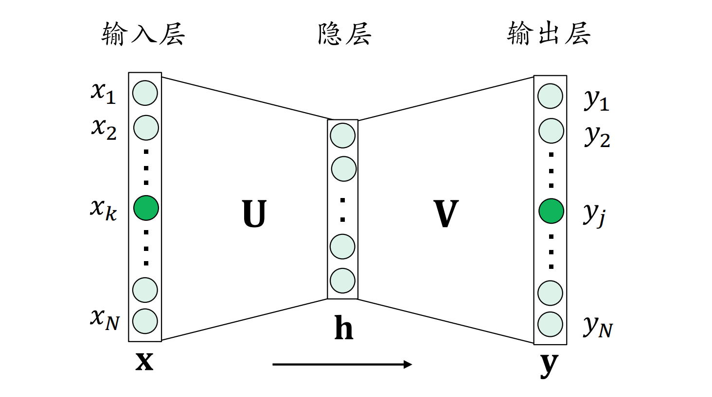
- 计算过程：
- 隐层向量 ，这里的 是一个参数矩阵
- 输出向量 ，这里的 是另一个参数矩阵
- 通过 Softmax 函数将输出向量 归一化，得到最终的概率分布
- 目标：调整参数矩阵 和 ，使得模型预测出的概率在真实的中心词上尽可能大，别的词上尽可能小
接着，考虑更多上下文的 CBOW 模型。
- 结构：CBOW 模型的隐层 通过取每个上下文单词对应的 的平均值得到
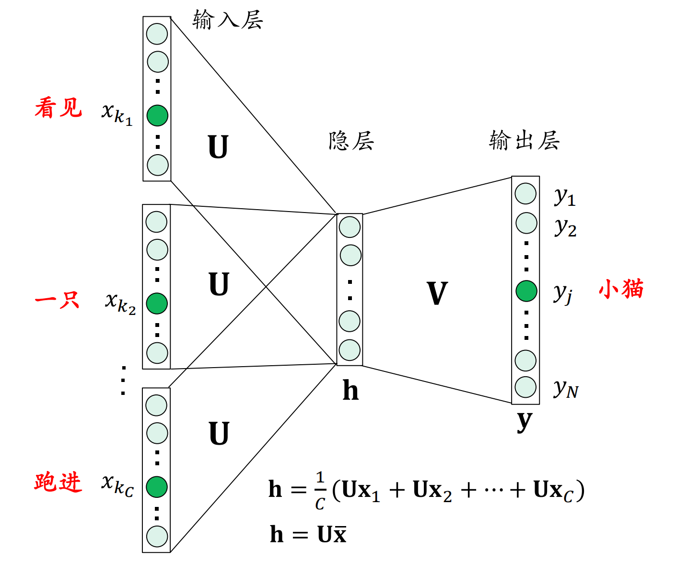
- 公式：
- 其中 是上下文单词的数量
Skip-gram 模型
-
任务：用中心的当前词来预测其上下文的词
-
示例：在同样的句子中，给定中心词“小猫”，来预测它周围可能出现的词（“我”、“看见”、“一只”、“快速”、…）
-
结构：与 CBOW 类似，但方向相反。
- 输入层 ()：中心词的独热向量
- 隐层 ()：中心词的词向量表示
- 输出层 ()：预测多个上下文单词的概率分布
-
目标：调整参数，使得模型在真实的上下文单词上预测出的概率尽可能大
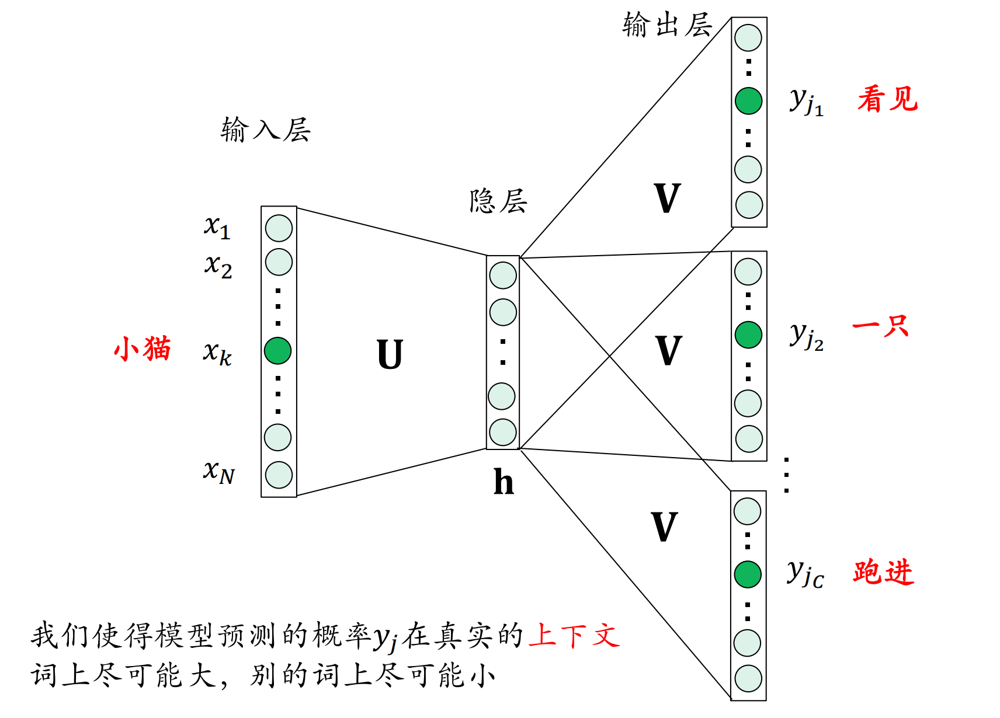
词向量模型的训练：反向传播算法（Back-propagation）
我们已经了解 CBOW 和 Skip-gram 模型的基本结构，现在的问题是：如何训练这些模型，也就是如何学习到最优的参数矩阵 和 。这里，我们以只有一个词上下文的 CBOW 模型为例。
- 前向计算：
- 损失函数：我们的目标是让模型预测的概率 在真实的中心词（假设其索引为 ）上尽可能大，于是定义损失函数 ，目标是最小化这个损失，即最大化
- 核心任务: 为了用梯度下降法最小化损失 ，我们必须计算出损失 对于两个参数矩阵 和 的梯度，即 和
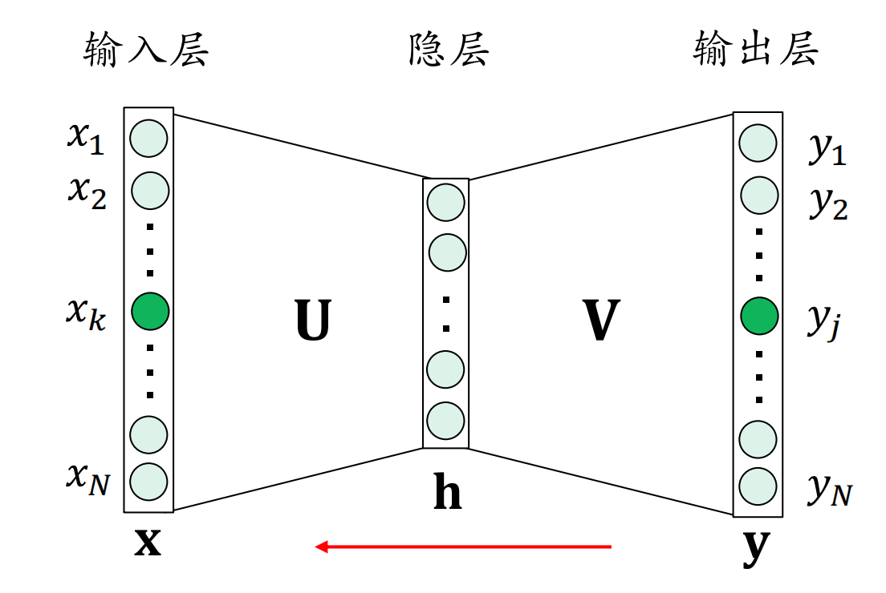
首先，化简损失函数 。
接着，将 对 求导。
为了简化表达，定义误差信号 。
从而 可以简写为：
最后，将 对 求导。
计算出梯度后，再设置一个学习率 ，我们就可以用梯度下降法来更新参数了。
那么，这一算法为什么叫“反向传播”呢？
- 答案：因为这个算法的核心在于预测误差 的逐层“反向传播”。
- 理解：
- 观察两个梯度公式：
- 我们可以把任何一层权重矩阵的梯度分解成两部分：该层的输入 和 该层接收到的误差信号
- 对于输出层权重 来说，它的输入是 ，它直接接收到的误差信号就是
- 对于输入层权重 来说，它的输入是 ，它接收到的误差信号是 从输出层经过 反向传播回来的结果，这个结果就是
- 因此，“反向传播”形象地描述了误差信号从网络末端（输出层）开始，乘以前一层权重的转置，一步步向网络前端（输入层）传递的过程。
- 观察两个梯度公式：
注意，在这个简化的模型里，隐层没有激活函数。如果中间层存在激活函数（例如 Sigmoid 或 ReLU），那么在反向传播误差时，还需要再乘上激活函数的导数。
对于 Skip-gram 模型，其损失函数定义为：
词向量模型的优化
- 问题：实际应用中的词汇表通常非常大，可能包含几十万甚至上百万个词，而 Softmax 函数需要对词典中每一个词都计算一次指数并求和，计算开销巨大
- 解决方案：将一个大的多分类问题转化为多个二分类问题
Hierarchical Softmax (分层柔性最大化)
- 思想：将词典中的所有词构建成一棵哈夫曼树（Huffman Tree），其中每个叶子节点代表词典中的一个词
- 预测一个特定单词的概率，就变成了从树的根节点开始，经过一系列“向左走”还是“向右走”的二分类决策，最终到达对应叶子节点的过程
- 目标词的最终概率，等于这条路径上所有二分类决策概率的乘积
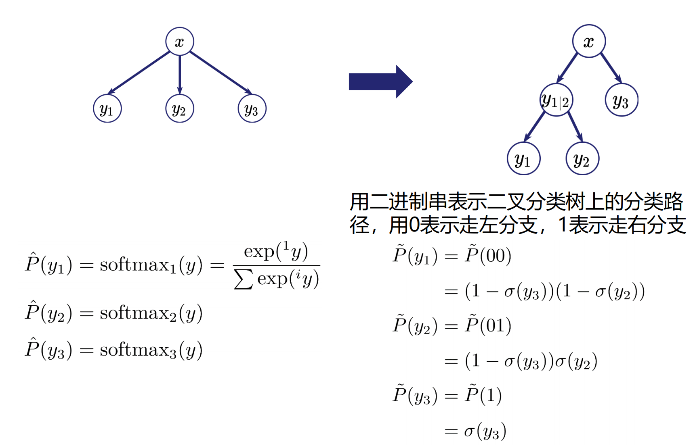
- 哈夫曼树：一种最优二叉树，高频词的路径短，低频词的路径长，可以最小化平均查找路径
- 在这里，频率就是每个类别的样本比例
- 构造：可以利用贪心法，不断地合并权重最小的子树得到
- 优点：将计算复杂度从 （ 是词典大小）降低到
Negative Sampling (负采样)
-
核心思想：我们训练模型的目的，只是为了得到高质量的词向量，并不需要在所有词上计算精确的输出概率
- 我们只需要模型能够在正确单词上的输出尽可能大，错误单词上的输出尽可能小就可以了
-
新的优化目标：我们把优化函数重新设计成为：
- 最大化正确单词上的输出：对于一个给定的（上下文，中心词）正样本对，我们希望模型给出的分数尽可能高
- 最小化“噪声”单词上的输出：我们再在噪声分布 下随机抽取 个错误的词（称为负样本），我们希望模型给这些负样本的分数尽可能低
其中 是 Sigmoid 函数，输出值范围是 。
-
优势：不需要归一化，甚至不需要计算每个单词的输出概率！
- 我们只需要计算正样本和选中的几个负样本的分数并更新对应的权重即可，计算量大大减少
-
噪声分布：负样本的抽样并不是完全均匀随机的，而是采用如下的噪声分布，其中 是单词 在语料库中出现的频率
- 采用小于 1 的幂，可以适当增加罕见词被采样为负样本的概率，避免高频词总是被选中，有助于改善训练得到的词向量性能
词向量的性质
通过训练得到的词向量具有非常有趣的语义特性。
- 语义相似性：语义相近的词，其词向量在空间上也相近
- 例如，king 和 queen 的向量很接近
- 线性关系：词向量在空间中的偏移量可以捕捉到词与词之间的类比关系
- 示例 1：
- 示例 2：
词向量模型的缺点
传统的词向量模型存在多义词问题。
- 多义词问题：传统的词向量模型为每个词只学习一个固定的向量，无法解决一词多义的问题
- 示例：“苹果”可以指水果，也可以指苹果公司
- “他手里拿了一个苹果正在吃”
- “他手里拿了一个苹果然后插上了充电器”
- 在这两种语境下，模型会给“苹果”同一个词向量，这显然是不准确的
高级版：与上下文相关的词向量（context-dependent word vectors）
- 解决方案：需要词向量的高级版——与上下文相关的词向量 (Context-dependent word vectors)
- 例如后续课程会讲到的动态词向量和预训练模型
常用工具
- CBOW 的 Pytorch 实现：https://docs.pytorch.org/tutorials/beginner/nlp/word_embeddings_tutorial.html#exercise-computing-word-embeddings-continuous-bag-of-words
Lecture 3: 矩阵求导和反向传播
这节课讲解了神经网络的数学基础，以及反向传播算法。
导数与梯度
-
导数 (Derivative):
- 定义：一个标量，表示当输入变量 发生微小改变时，标量函数 的变化率
-
偏导数 (Partial Derivative):
- 定义：一个标量，对于多变量函数 ，偏导数是只考虑其中一个变量变化时的导数，而将其他变量视为常数
- 示例：对于 ，对 的偏导
-
梯度 (Gradient):
- 定义：一个向量，由函数所有变量的偏导数按顺序组成
- 公式：假设函数 具有 个输入和 1 个输出，即 ，那么
- 用途：梯度向量指向函数值增长最快的方向
- 在机器学习中，我们通常沿着负梯度方向更新参数，以最快速度减小损失函数
-
Hessian 矩阵 (海森矩阵):
- 定义：一个矩阵，是梯度的一阶导，即对梯度的每个分量（偏导数）再求一次所有偏导数，包含了函数的所有二阶偏导数
雅各比矩阵 (Jacobian Matrix)
当函数不仅有多个输入，还有多个输出时，梯度的概念被推广为雅各比矩阵。
-
场景：函数 有 个输入 和 个输出
-
定义：一个 的矩阵，其中第 $i4 行、第 列的元素是第 个输出 对第 个输入 的偏导数
- 雅各比矩阵是向量对向量求导的结果，包含了所有可能的一阶偏导数
-
经典例子：
链式法则 (Chain Rule)
-
复合函数的梯度（标量形式）：
- 法则：最终输出对最初输入的导数，等于所有中间环节偏导数的乘积
- 示例：设有函数 和 ，那么 对 的导数
-
复合矩阵函数的梯度：
- 法则：当函数涉及向量和矩阵时，法则依然成立，只是乘法变成了雅各比矩阵的乘法
- 示例：设有矩阵函数 和 ，那么 对 的雅各比矩阵
这正是反向传播算法的数学本质：误差从网络末端逐层向前端传播，每经过一层，就乘以该层的雅各比矩阵。
反向传播算法实例
我们以带有激活函数的 3 层 MLP 为例，介绍反向传播算法。
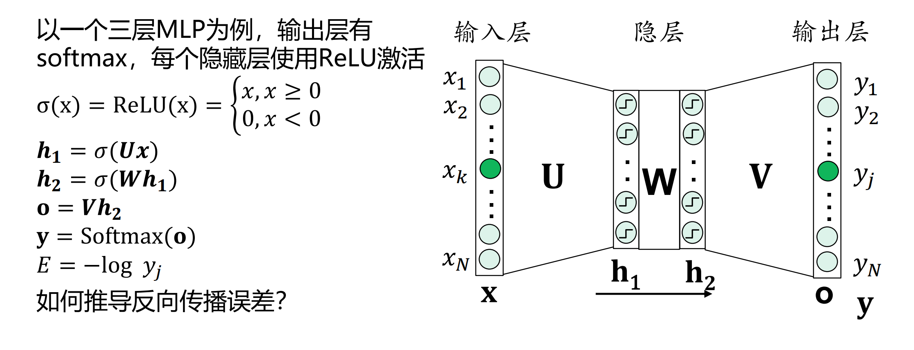
我们的目标是利用雅各比矩阵和链式法则，推导出损失 对每一层权重 , , 的梯度。
首先，计算输出层的误差信号，即损失 对输出分数 的梯度。
引入误差信号 ，则得到
现在有了起始的误差信号 ，就可以利用链式法则逐层向后计算了。
观察上述推导，我们可以总结出反向传播的规律：
任何一层权重矩阵的梯度 = 反向传播到该层的误差信号 × 该层在前向传播时的输入
- 对于 ，误差信号是 ，输入是
- 对于 ，误差信号是 经过 和 ReLU 传播后的 ，输入是
- 对于 ，误差信号是继续经过 和 ReLU 传播后的 ，输入是
计算图 (Computational Graph)
使用计算图，我们可以更系统、更模块化地理解和实现反向传播。
- 计算图：来表复合函数的运算过程，其中每个内部节点代表一次计算
- 前向传播：数据和计算结果沿着图的边，从输入到输出正向流动
- 反向传播：误差信号（梯度）沿着图的边，从输出到输入反向流动
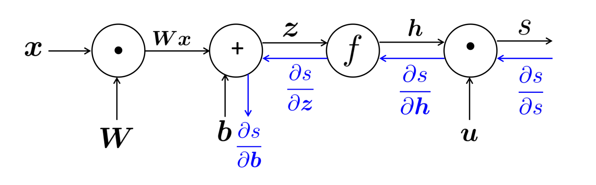
- 反向传播的法则：Downstream Gradient = Upstream Gradient × Local Gradient
- Upstream Gradient (上游梯度): 从上游（靠近最终输出）传来的梯度
- Local Gradient (本地梯度): 节点自身运算对输入的导数（雅各比矩阵）
- Downstream Gradient (下游梯度): 节点计算后，准备传给下游（靠近初始输入）的梯度
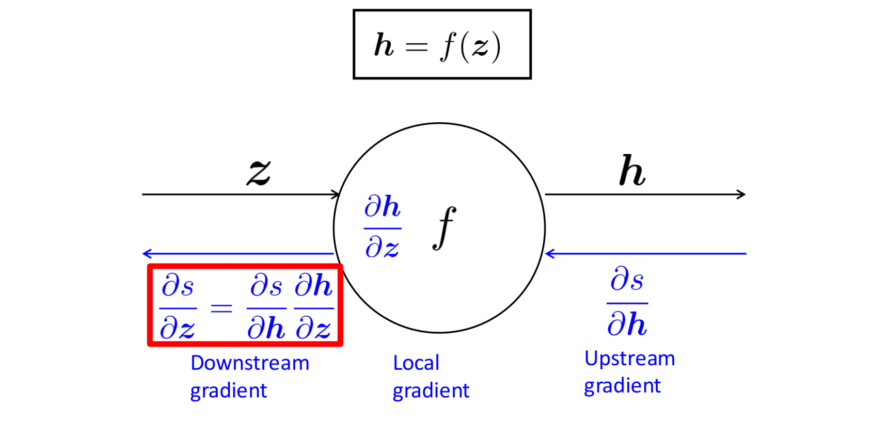
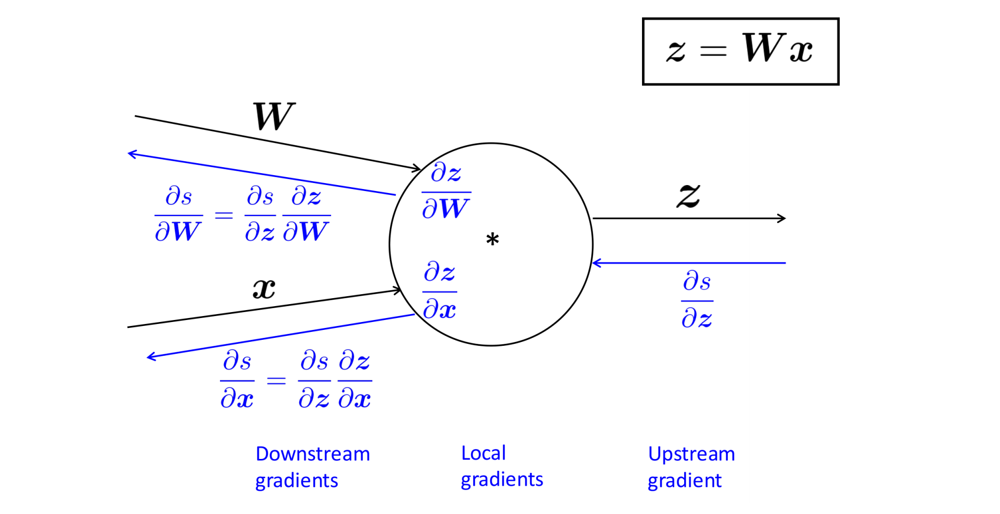
- 简单实例
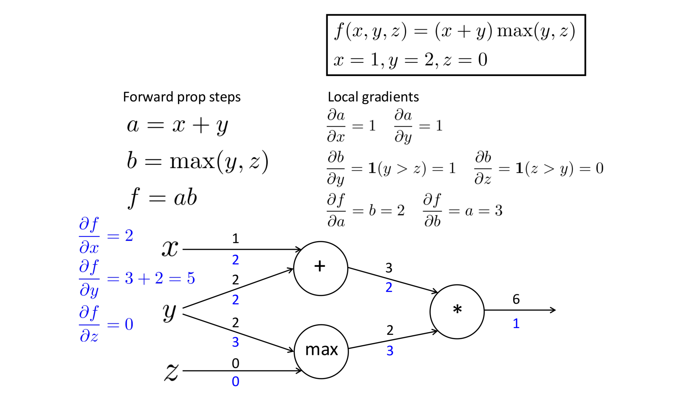
反向传播的代码实现
现代深度学习框架正是基于计算图的思想来自动实现反向传播的。
-
实现概述：
- 第一步：前向传播：按拓扑顺序遍历计算图，计算每个节点的值，并缓存中间结果（如输入值）
- 第二步：反向传播：逆序遍历计算图，每个节点接收上游梯度，利用缓存的输入值计算本地梯度，然后计算并传递下游梯度
-
伪代码：
1 | |
- 单节点代码实现：以乘法节点为例
1 | |
Lecture 4: 语言模型
什么是语言模型
- 语言建模 (Language Modeling)：是一个学习任务，其核心目标是让一个模型学会根据给定的上文，来预测下一个最可能出现的词
- 例子：给定句子“学生们在课堂上打开了他们的___”，模型需要预测空格处最可能填入的词，比如“课本”、“电脑”等
- 正式定义：给定一个词序列 ，语言建模任务的目标是计算下一个词 的条件概率分布 ，这个分布会告诉我们词典 中每一个词出现在下一个位置的概率
- 语言模型 (Language Model)：执行“语言建模”这个任务的系统或模型，就被称为语言模型
语言模型的应用场景
-
计算文本概率：语言模型最基本的功能是计算一段文本出现的概率，可以理解为这段文本有多“通顺”
- 原理：利用概率的链式法则，一段文本 的联合概率可以分解为一系列条件概率的乘积：
这个分解后的每一项，正好就是语言模型所计算的概率。
- 原理：利用概率的链式法则，一段文本 的联合概率可以分解为一系列条件概率的乘积：
-
联想输入/自动补全：在搜索引擎、输入法中，当你输入“我明天要去…”时，系统会推荐“医院”、“学校”等词
- 这背后就是语言模型在预测下一个最可能的词
-
文本生成：语言模型可以像“文字接龙”一样生成连贯的文本
- 生成过程：
- 给定一个初始条件（如 “today the”）
- 语言模型计算出下一个词的概率分布
- 从这个分布中采样一个词（如 “price”）并添加到末尾
- 将新的序列（“today the price”）作为新的条件，重复上述过程
- 通过这种自回归的方式，模型可以生成很长的文本
- 生成过程：
-
机器翻译：在统计机器翻译中，语言模型是核心组件之一
- 翻译模型可能会生成多个候选句子，例如对于“我对你感到满意”，可能生成 “I satisfied with you” 或 “I’m satisfied with you”
- 语言模型会判断出 “I’m satisfied with you” 这句话在英语中出现的概率更高，更通顺，从而帮助翻译引擎选择最优的翻译结果
语言模型的种类
-
基于统计的方法：这类方法的代表就是 N-gram 语言模型，它通过统计大规模语料库中不同词序列（n-grams）的出现频率来计算概率
-
基于神经网络的方法：这类方法使用神经网络（如 RNN, Transformer）来学习词与词之间的复杂依赖关系
如何评价语言模型的性能：混淆度（perplexity）
-
分类精度不适用：对于分类任务，我们可以用“准确率”来评价模型好坏，但语言模型不行，原因是：
- 我们关心的不仅仅是“下一个词是否预测正确”，而是模型在每个预测位置给出的概率分布，特别是真实的下一个词的概率
- 因此，简单判断“下一个词是否预测正确”无法有效衡量语言模型的性能
-
评价标准：给定一段模型没有见过的、足够长的、真实的测试语料，模型对这段语料预测的概率越高，说明这个模型越好
- 核心思想：一个好的语言模型，应该能够给真实、自然的句子赋予高概率
- 足够长：避免模型因为运气好，刚好在要预测的几个位置上表现良好
- 没见过：防止模型通过“背诵”训练集来作弊
-
混淆度 (Perplexity, PPW) 的推导：
- 计算测试集概率：首先，我们计算模型预测 个单词组成的测试集 的文本概率
- 长度归一化（几何平均）：
- 由于概率是连乘的，句子越长，总概率会越小
- 为了消除长度影响，我们将总概率平均到每个词上
- 因为是乘积，所以使用几何平均：
- 物理意义：在测试集中，平均每个模型做出预测的位置上，那个实际出现的真实词被模型赋予的概率
- 取倒数，得到混淆度：为了让指标更直观（数值越低越好），我们对上一步的结果取倒数，得到最终的评价指标——混淆度 (Perplexity per Word, PPW)
- 物理意义：在测试集中，对于每个模型做出预测的位置，那个实际出现的真实词平均被模型赋予的概率的倒数
-
混淆度的理解：
- 取值范围： (词典大小)，PPW 越低，模型性能越好
- 两个极端例子：
- 完美模型：总能以 100% 的概率预测到正确的词，其 PPW 为 1
- 白板模型：对所有词都给出均匀概率 ，其 PPW 为
- 直观解释：混淆度可以被看作是模型在预测下一个词时不确定的选项数量
- 如果一个模型的混淆度是 30，这意味着模型在做预测时，其不确定性等价于从 30 个合理的候选词中进行随机猜测
- 这个值越低，说明模型对下一个词的判断越有把握，候选范围越小，性能越好
N-gram 语言模型
在了解了什么是语言模型之后，我们介绍第一种实现方法——基于统计的 N-gram 语言模型。
N-gram 的定义
- 定义：N-gram 是指文本中连续出现的 个单词组成的块
- 以句子 “学生/打开/了/他们/的/____” 为例
- Unigram (1-gram): 单个词，如 “学生”, “打开”, “了”
- Bigram (2-gram): 两个连续的词，如 “学生 打开”, “打开 了”
- Trigram (3-gram): 三个连续的词，如 “学生 打开 了”
- 4-gram: “学生 打开 了 他们”。
- 核心思想：N-gram 语言模型通过统计不同 n-gram 在大型语料库中出现的频率，来预测下一个词的概率
如何确定 N-gram 语言模型中的参数
我们知道，一个词的出现概率严格来说依赖于它前面所有的词。为了简化问题，N-gram 模型引入了马尔科夫假设。
- 马尔科夫假设：一个词的出现概率，只与它前面 个词有关，而与其他更早的词无关
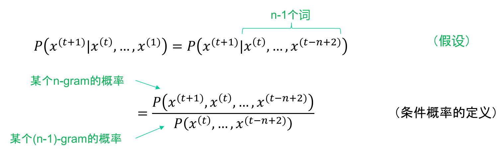
-
N-gram 概率的计算方法：有了马尔科夫假设，可以利用条件概率来计算 N-gram 概率
- 分子是整个 n-gram 序列出现的概率
- 分母是其前缀 (n-1)-gram 序列出现的概率
- 通过在大型语料库中进行计数的方式，来近似这些概率
-
示例：
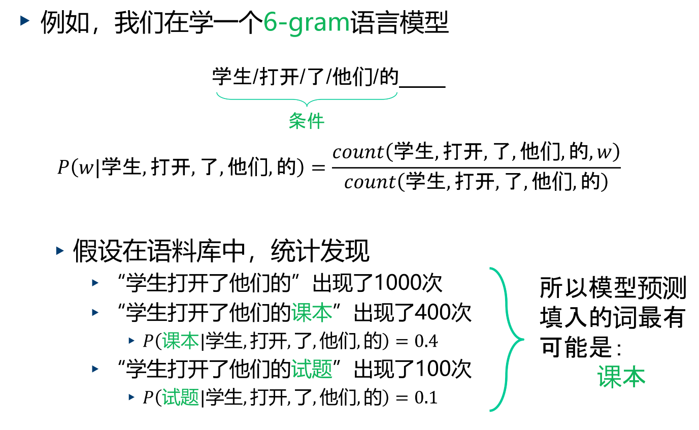
最大似然估计
我们上面用“数数”的方法（即用频率代替概率）来估计参数，这看起来非常直观。但这种做法有理论依据吗？它是否能保证我们的模型是“最优”的呢？
-
训练模型的初衷：调整模型参数，以最大化模型在训练数据上预测出的总概率（即似然函数）
-
最大似然估计 (MLE)： 是一种经典的参数估计方法
- 核心思想：寻找一组参数 ，使得在这组参数下，我们观测到的训练数据样本出现的概率是最大的
-
MLE 的结论：通过数学推导（拉格朗日乘子法），我们发现对 N-gram 语言模型，能够使其在训练集上似然函数最大化的参数 （即给定前文 ，下一个词是 的概率），其最优解恰好就是我们通过频率计数得到的结果
- 理解：我们凭直觉使用的“数数”方法，实际上就是在进行最大似然估计，它不仅简单直观，而且在数学上也是最优的
Unigram、bigram 示例
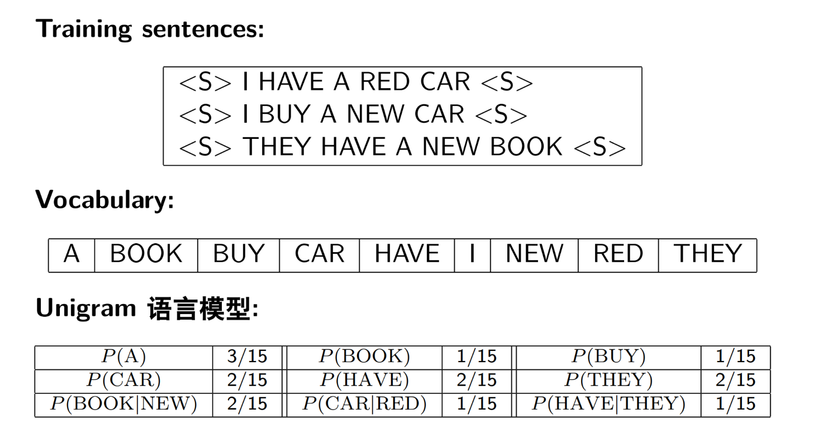
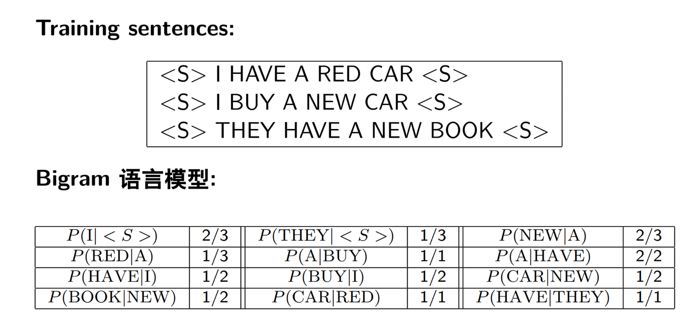
- N-gram 模型的局限性：
- 上下文窗口有限：马尔科夫假设丢弃了长距离的依赖关系
- 例如，在 “当监考员发出指令后，学生打开了他们的___” 这个例子中，“监考员”这个远距离的词其实对预测“试题”很有帮助，但 N-gram 模型（如果 n 不够大）会忽略这个信息
- 生成的文本语义不连贯：虽然 N-gram 生成的文本在局部（n 个词的窗口内）是通顺的，但由于缺乏全局的语义理解，长文本往往会出现逻辑跳跃和语义不连贯的问题
- 数据稀疏问题：这是 N-gram 模型最致命的问题，我们将在下一部分详细讨论
- 上下文窗口有限：马尔科夫假设丢弃了长距离的依赖关系
N-gram 语言模型中的数据稀疏问题及解决办法
数据稀疏是所有基于统计的自然语言处理方法（尤其是 N-gram 模型）面临的核心挑战。
- 问题根源：语言的组合性是爆炸性的，随着 $n4 的增大，可能出现的 n-gram 组合数量会急剧增加，远远超过任何有限语料库能够覆盖的范围
- 具体表现：
- 零概率 (Unseen Events)：很多在现实中完全合理、通顺的 n-gram，可能因为我们的训练语料库不够大，而一次都没有出现过
- 低频次 (Very Low Frequency)：某些 n-gram 虽然出现过，但次数非常少（比如仅 1 次），基于这么少的样本做出的概率估计是极其不可靠的
- 例子：在 Berkeley Restaurant Corpus 上，即使是对于最简单的 bigram 模型，语料中超过 90% 的可能的 bigram 组合都是没有出现过的（即次数为 0）
折扣法（Discounting）
- 方法：修正原始的 n-gram 的频次，将一部分高频 n-gram 的概率值分配到那些零样本的 n-gram 上，使得概率量重新分布
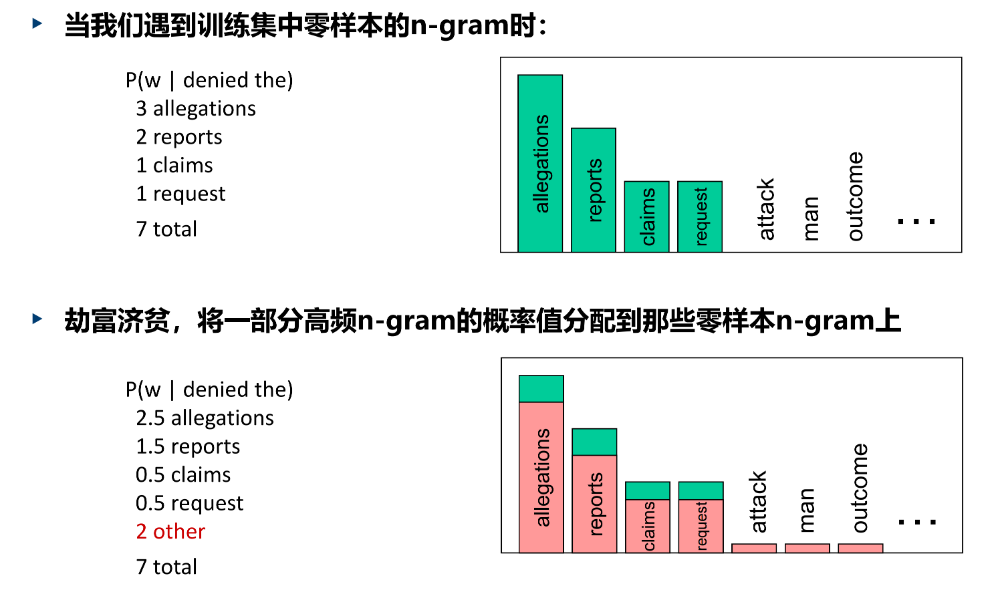
回退（Backoff）及插值（interpolation）
-
回退 (Backoff)：当更高阶的 n-gram 不存在时，回退到使用低一阶的 n-gram 算出来的条件概率来替代
- 例子：当我们试图计算一个 trigram 概率 时：
- 先检查 这个 trigram 在语料中是否出现过
- 如果出现过，就直接用它的统计数据来计算概率
- 如果没出现过（数据稀疏），我们就回退到低一阶的模型，即用 bigram 概率 来近似替代
- 如果 bigram 也没出现过，就继续回退到 unigram 模型，即用 来替代
- 例子：当我们试图计算一个 trigram 概率 时：
-
插值 (Interpolation)：将不同阶的 n-gram 给出的条件概率线性组合起来，给它们不同的权重
神经网络语言模型
前馈神经网络
这种方法直接借鉴了 N-gram 模型的思路：使用固定长度的前文（历史词）来预测下一个词。但它用神经网络代替了简单的频率计数。
-
方法：将 n-1 个历史词的词向量拼接起来，形成一个大的向量，然后将其输入到一个前馈神经网络中，网络最终输出下一个词的概率分布
-
计算流程：以 “喜 欢 这 部 __” 为例
- 输入层：给定前文 “喜”, “欢”, “这”, “部”，我们将每个字表示为其独热向量 (one-hot vector)
- 词嵌入层：通过查询一个词向量矩阵 (这是一个可学习的参数)，将每个字的独热向量转换为低维稠密的词向量
- 拼接 (Concatenation)：将这4个词向量拼接成一个长向量
- 隐藏层：将拼接后的向量 通过一个带激活函数 的全连接层，计算出隐藏层表示 ：
- 输出层：将隐藏层表示 通过第二个全连接层，并使用 Softmax 函数，最终得到词典中每个词的概率分布 ：
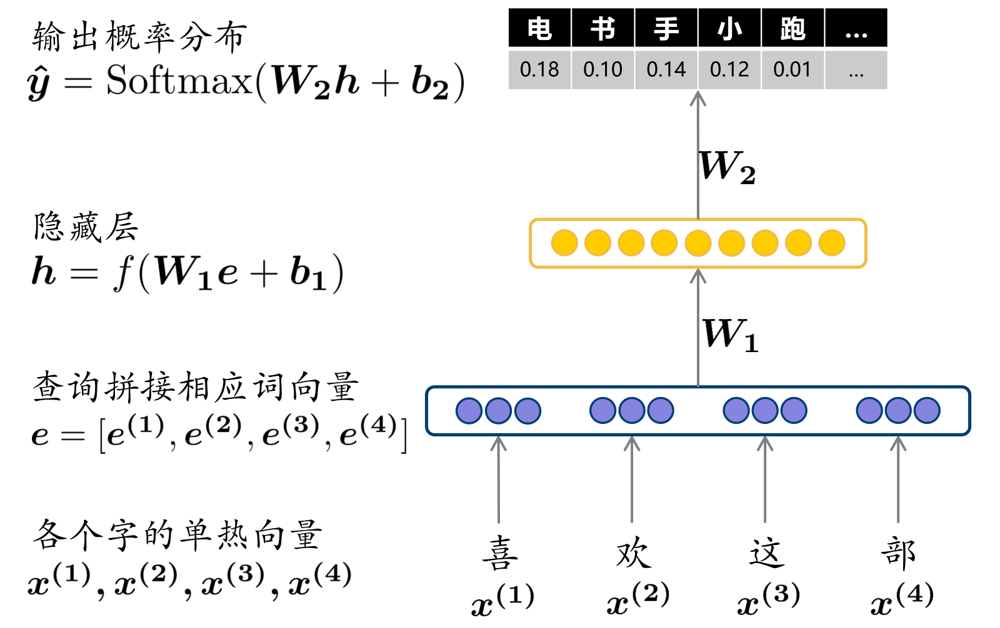
这个模型由深度学习先驱 Yoshua Bengio 在 2003 年提出，是神经网络语言模型的开山之作。
-
优点：
- 缓解数据稀疏：通过使用词向量，模型可以在一个语义空间中操作
- 即使“喜欢这部电影”没见过，但如果模型知道“电影”和“影片”的词向量很相似，它就能将在“喜欢这部影片”上学到的知识泛化过来，这比 N-gram 的严格匹配要好得多
- 参数效率更高：N-gram 模型需要存储海量的 n-gram 频次表，而神经网络模型只需要存储几个权重矩阵，通常占用空间更小
- 并行计算：由于每次预测的输入长度是固定的，理论上可以并行处理不同位置的预测任务
- 缓解数据稀疏：通过使用词向量，模型可以在一个语义空间中操作
-
问题与局限：
- 无法有效建模长时依赖：和 N-gram 一样，它只能看到固定长度 n 的历史，无法建模长时依赖
- 参数量与窗口大小 n 相关：权重矩阵 的大小 直接依赖于 ，如果想扩大历史窗口 ，参数量会线性增长，导致存储和计算问题
循环神经网络
为了解决前馈神经网络语言模型的局限性，特别是固定窗口和无法建模长时依赖的问题，循环神经网络 (RNN) 应运而生。其突破性思想在于在时间维度上共享参数。
-
权重矩阵的问题：前馈模型中，权重矩阵 对每个位置的输入词都有独立的参数，这意味着：
- 需要单独对每一个历史时刻的词学习参数
- 不同时刻间共通的处理要不断重复学习
-
重构权重矩阵：RNN 认为，处理不同位置的词的方式应该是相同的，因此，它将 分解并重构为：
- 一个用于处理当前时刻输入的权重
- 一个用于处理上一时刻信息的权重
- 这两个权重矩阵 和 的尺寸不再与历史长度 相关，并且在处理序列的每一步中，使用的都是同一套 和
-
RNN 的计算流程：RNN 引入了隐藏状态 (Hidden State) ，可以理解为一个记忆单元，在时间步之间传递信息
- 初始化：在处理序列开始前，初始化一个隐藏状态 (通常为零向量)
- 循环计算 (在每个时间步 )：
- 输入：当前时刻的词向量 和上一时刻的隐藏状态
- 更新隐藏状态：将两者结合，通过一个激活函数 ，计算出当前时刻的隐藏状态 ：
- 输出：使用当前隐藏状态 来预测下一个词的概率分布：
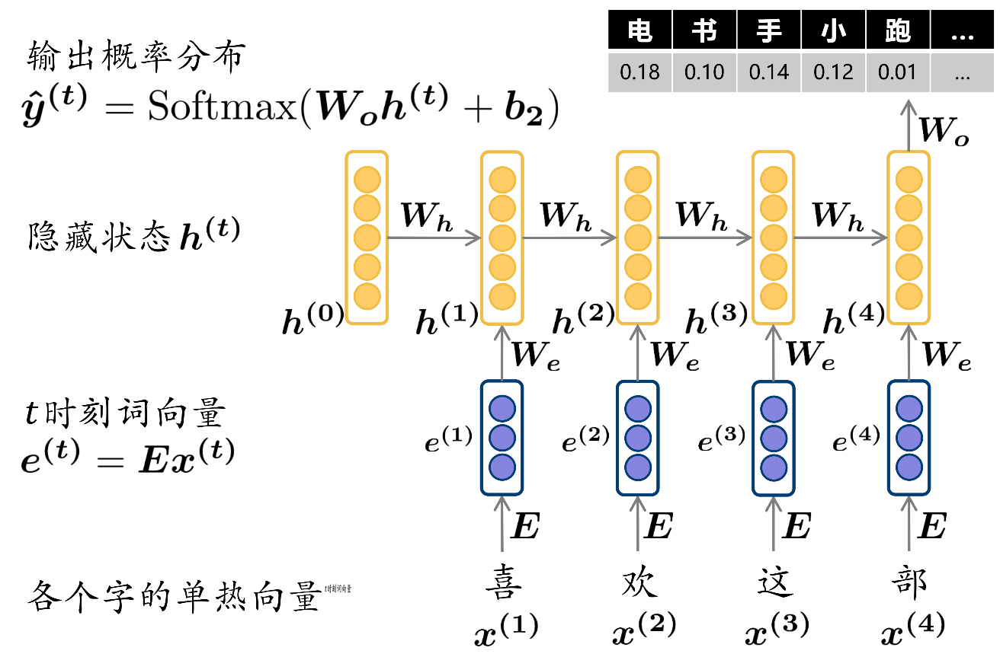
- RNN 的训练：
- 损失函数：在每个时间步 ，我们都有一个预测 和一个真实目标（即序列中的下一个词 )，我们可以计算一个交叉熵损失
- 总损失：整个序列的总损失是所有时间步损失的平均值
- 损失函数：在每个时间步 ，我们都有一个预测 和一个真实目标（即序列中的下一个词 )，我们可以计算一个交叉熵损失
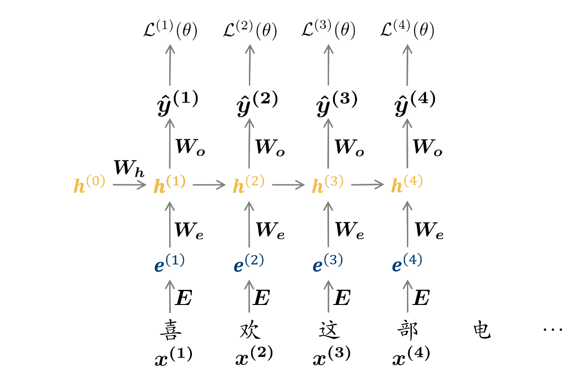
- RNN 的梯度计算：由于权重 , , 在所有时间步都是共享的，一个参数在 时刻的梯度，会受到 时刻以及所有未来时刻损失的影响
- 这意味着误差需要沿着时间步反向传播，这个过程被称为通过时间的反向传播 (BPTT)
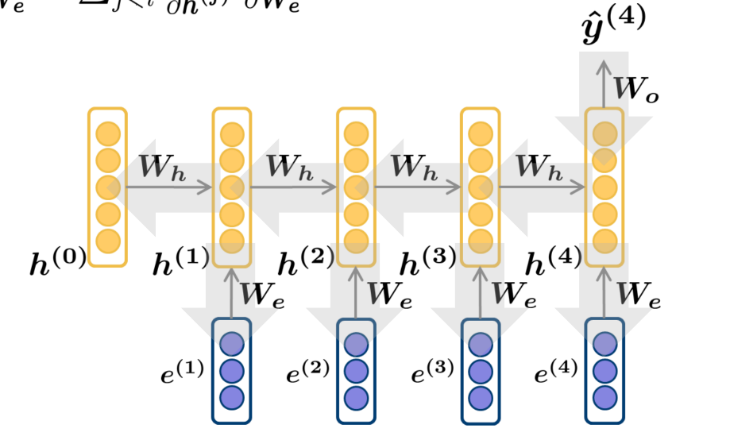
- RNN 的问题：RNN 在理论上可以捕捉无限长的依赖，但在实践中却很困难，主要原因是梯度消失/爆炸问题
- 数学根源：在 BPTT 中，梯度从后向前传播时，需要反复连乘权重矩阵
- 如果 的模（或最大奇异值）大于 1，经过多次连乘后，梯度会指数级增长，导致梯度爆炸（训练不稳定）
- 如果 的模小于 1，经过多次连乘后，梯度会指数级衰减至 0，导致梯度消失
- 梯度爆炸的解决：可以通过梯度裁剪 (gradient clipping) 来解决，即当梯度的范数超过一个阈值时，就将其缩放到阈值大小
- 梯度消失：
- 根源：信息在时间维度上传递时的无差别衰减
- 后果：模型无法学习到长距离依赖关系
- 例如，在 “This kind of books is/are great.” 中，决定动词形式的是远处的 “kind” 而非 “books”，如果梯度在传回到 “kind” 之前就消失了，模型就无法学到这个语法规则
- 解决思路：向下一时刻传递信息时，考虑当前时刻的上下文情况，有选择地保留、遗忘或更新信息
- 我们需要一种机制，让模型可以根据当前输入 的重要性，来动态地决定应该保留多少 中的旧信息，并添加多少新信息
- 数学根源：在 BPTT 中，梯度从后向前传播时，需要反复连乘权重矩阵
长短时记忆网络 LSTM 及 GRU
长短时记忆网络 (Long Short-Term Memory, LSTM)
LSTM 是 RNN 的一种高级变体，旨在解决梯度消失问题，从而更好地捕捉长距离依赖。
-
核心思想：
- 分离长期记忆与短期记忆：
- 长期记忆 (Cell State)：引入一个新的向量 ，负责存储和传递长期的状态信息，每一时刻根据上下文情况更新，且不能被外界直接观察
- 短期记忆 (Hidden State)： 依然存在，但其角色变为当前时刻被“激活”的长期记忆，它根据当前上下文，从长期记忆 中读取信息，用于指导当前时刻的输出和下一时刻的长期记忆更新
- 门控机制 (Gating Mechanism)：引入了门 (Gate) 的概念来精细地控制信息的流动
- 门是什么：一个与记忆向量维度相同的向量，其每个元素都是 0 到 1 之间的实数（通过 Sigmoid 激活函数得到）
- 如何工作：将“门”向量与另一个信息向量进行逐元素相乘
- 当门的值接近 0 时，相当于“关闭”，信息无法通过
- 当门的值接近 1 时，相当于“开启”，信息可以顺利通过
- 动态生成：门是根据当前输入 和上一时刻的短期记忆 动态生成的，这使得 LSTM 可以根据上下文智能地控制信息流
- 分离长期记忆与短期记忆：
-
LSTM 的公式与三个核心门：在每个时间步 ，LSTM 输入词向量 ，通过三个门来更新其长期记忆 和短期记忆
- 遗忘门 (Forget Gate, )：决定应该从上一时刻的长期记忆 中丢弃哪些信息。
- 输入门 (Input Gate, )：决定当前时刻有哪些新的信息可以被写入长期记忆
- 输出门 (Output Gate, )：决定从更新后的长期记忆 中，提取哪些信息作为当前时刻的短期记忆 输出出去
- 遗忘门 (Forget Gate, )：决定应该从上一时刻的长期记忆 中丢弃哪些信息。
-
状态更新：
- 更新长期记忆 ：
- 生成候选单元状态：
- 更新单元状态：第一项表示忘记旧信息，第二项表示学习新信息
- 生成候选单元状态：
- 更新短期记忆 ：从长期记忆中过滤并输出当前所需的信息
- 更新长期记忆 ：
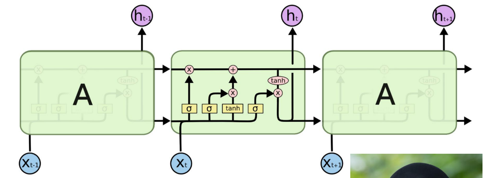
- 梯度消失的缓解：LSTM 让网络能够更容易的保留远距的信息，从而极大的缓解了梯度消失的问题
- 朴素 RNN 需要 为单位矩阵以完全保留历史信息
- 而 LSTM 只需要让遗忘门 的值为全 1，就可以完全保留历史信息
门控循环单元 (Gated Recurrent Unit, GRU)
GRU 是 2014 年提出的 LSTM 的一个简化变体，它同样非常有效。
-
核心思想：
- 合并记忆状态：GRU 没有独立的长期记忆单元 ，而是将所有记忆信息都存储在唯一的隐藏状态 中
- 简化门控：GRU 只使用两个门来控制信息流
-
GRU 的公式与两个核心门：
- 更新门 (Update Gate, )：类似于 LSTM 中遗忘门和输入门的结合，它同时决定要忘记多少旧信息，以及要加入多少新信息
- 重置门 (Reset Gate, )：决定在计算当前候选状态时，要忽略掉多少上一时刻的隐藏状态
- 更新门 (Update Gate, )：类似于 LSTM 中遗忘门和输入门的结合，它同时决定要忘记多少旧信息，以及要加入多少新信息
-
状态更新：
- 计算候选状态：重置门 控制了历史信息 的使用程度
- 更新最终隐藏状态：更新门 像一个开关，在旧状态 和新候选状态 之间进行插值
- 计算候选状态：重置门 控制了历史信息 的使用程度
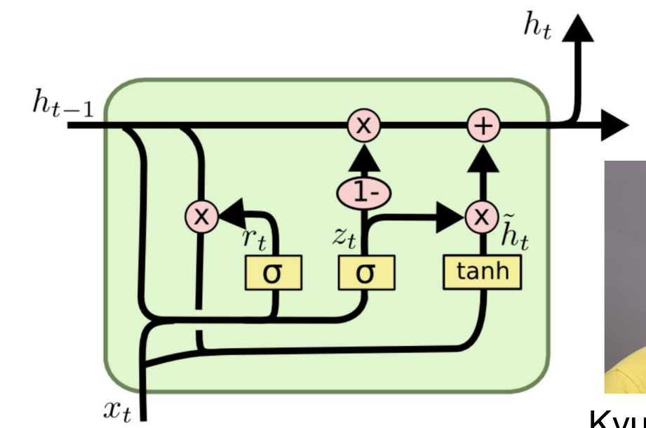
不同语言模型效果对比
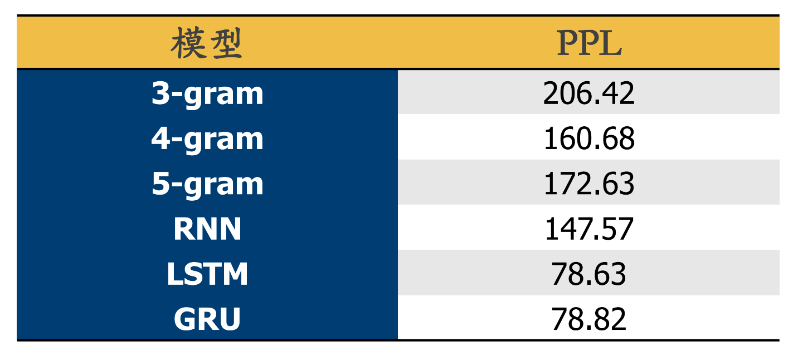
Lecture 5: 分词
分词（Tokenization），又称为词元切分，是将原始的文本字符串分割成一个个有意义的基本单元（称为“词元”或 token）的过程。这是所有自然语言处理任务的第一步。
问题与需求
看似简单的切分任务，在实际中会遇到各种复杂情况。
- 简单情况：对于像 “You are what you eat.” 这样的简单英文句子，直接按照空格和标点符号切分，通常就能得到不错的结果
You / are / what / you / eat / .
- 复杂情况：缩写词 (Contractions)
- 问题：如何处理像 “I’m”, “aren’t” 这样的缩写词
- 方法一：作为单个词
- 将
I'm和aren't视为独立的词元。 - 优点：简单
- 缺点：会增加词汇表的大小，加剧数据稀疏问题
- 将
- 方法二：拆分处理
- 将缩写词拆分为其组成部分，如
I'm->I / 'm，aren't->are / n't - 优点：可以有效减小词汇表，因为
are和n't可能会在别处出现 - 缺点：需要制定更复杂的拆分规则
- 将缩写词拆分为其组成部分，如
- 复杂情况：数字与符号
- 问题：如何处理像
$300,000,000或Fig. 3这样的组合 - 方法一：完全拆分
- 将
$300,000,000切分为$ / 300 / , / 000 / , / 000 - 缺点：完全失去了数字作为一个整体的语义
- 将
- 方法二：不拆分
- 将
$300,000,000和Fig. 3保留为单个词元 - 优点：保留了其作为一个整体的意义
- 缺点：会造成词汇表爆炸，如
$300,000,001和$300,000,002将被视为两个完全不同的词元
- 将
- 问题：如何处理像
词级别的词元切分 (Word-level Tokenization)
这种方法的目标是把文本切分成我们传统意义上的“单词”。
-
基于规则的方法：
- 核心：使用正则表达式 (Regular Expressions) 来定义各种切分规则
- 过程：通过不断编写和完善一系列正则表达式，来处理上述提到的缩写、数字、标点等各种复杂情况
- 优点：实现相对简单，可控性强
- 缺点：规则需要专家手工制定，难以覆盖所有语言现象，泛化能力有限
-
基于学习的方法：
- 核心：将分词任务看作是一个序列标注 (Sequence Labeling) 任务
- 过程：类似于中文分词，通过在大量已标注好的语料上训练模型，让模型自动学习切分的边界
- 优点：不需要手工制定规则，模型可以从数据中自动学习
亚词级别的词元切分 (Subword-level Tokenization)
现代 NLP 模型，尤其是大型预训练语言模型，普遍采用亚词切分。
- 亚词切分的必要性：
- 词汇表爆炸问题：
- 对于英语、德语等形态变化丰富的语言，一个词根（如 response）可以派生出多种形式（responsive, responsible, responsibility），如果都按词级别切分，词汇表会变得异常庞大（一个中大型语料库可达 30-60 万词）
- 巨大的词汇表不仅消耗内存，更严重的是会导致未登录词 (Out-of-Vocabulary, OOV) 问题，即测试时遇到训练时没见过的词，模型将无法处理
- 词与字母的权衡：
- 词级别 (Word-level)：语义单元好，但词表太大，有 OOV 问题
- 字母级别 (Char-level)：词表非常小（约几十到一百个），无OOV问题，但破坏了单词的完整性，语义信息丢失严重，且序列会变得非常长
- 亚词级别 (Subword-level)：试图在两者之间找到一个最佳平衡点
- 齐夫定律 (Zipf’s Law)：语言中词频分布极不均匀，少数高频词占据了绝大部分文本，而大量词汇是低频的，这种长尾分布的特性使得按词切分效率很低
- 词汇表爆炸问题：
BPE：Byte-Pair Encoding (字节对编码)
BPE 是目前最主流的亚词切分算法之一，最早用于数据压缩领域，后被引入 NLP。
-
核心思想：一个自底向上的、基于频率的数据驱动算法，它从最基本的单元（字母）开始，不断地将语料中最高频的相邻单元对合并成一个新的、更长的单元
-
算法流程：
- 初始化：将语料库中的所有单词拆分成单个字母的序列，初始词汇表包含所有出现过的单个字母
- 迭代合并：在设定的迭代次数内，重复以下步骤：
- 扫描当前语料库（由现有词元组成的序列），找到出现频率最高的相邻词元对（bi-gram）
- 将这个最高频的词元对合并成一个新的、更长的词元
- 将这个新的词元添加到词汇表中
- 终止：达到预设的迭代次数或词汇表大小后停止
-
示例: 语料:
{'low_': 5, 'lowest_': 2, 'newer_': 3, 'wider_': 6}- 初始：词汇表为
{l, o, w, e, s, t, n, r, i, d, _} - 迭代1：最高频的相邻对是
r和_(在newer_和wider_中共出现 3+6=9 次)，合并r_，词汇表新增r_ - 迭代2：最高频的相邻对是
e和r_，合并er_，词汇表新增er_ - 迭代3：最高频的相邻对是
l和o，合并lo，词汇表新增lo - 迭代4：最高频的相邻对是
lo和w，合并low，词汇表新增low - 最终词汇表中的词元数目为：初始词汇数 + 迭代次数
- 初始：词汇表为
-
优点：
- 在不同切分粒度间取得平衡：有效解决了单纯按字母切分（破坏语义）和按单词切分（词表爆炸）各自的弊端，并且最终的词元数量可以精确控制
- 解决未登录词（OOV）问题：任何未见过的词都可以被拆分成已知的亚词单元的组合，最坏情况下可以拆成单个字母，因此不存在严格意义上的 OOV
- 高效实用：该算法的计算复杂度低，使其能够在大规模语料库上高效地进行训练和应用
- 应用广泛：是目前绝大多数 NLP 大模型所采用的主流词元切分方法
常用工具
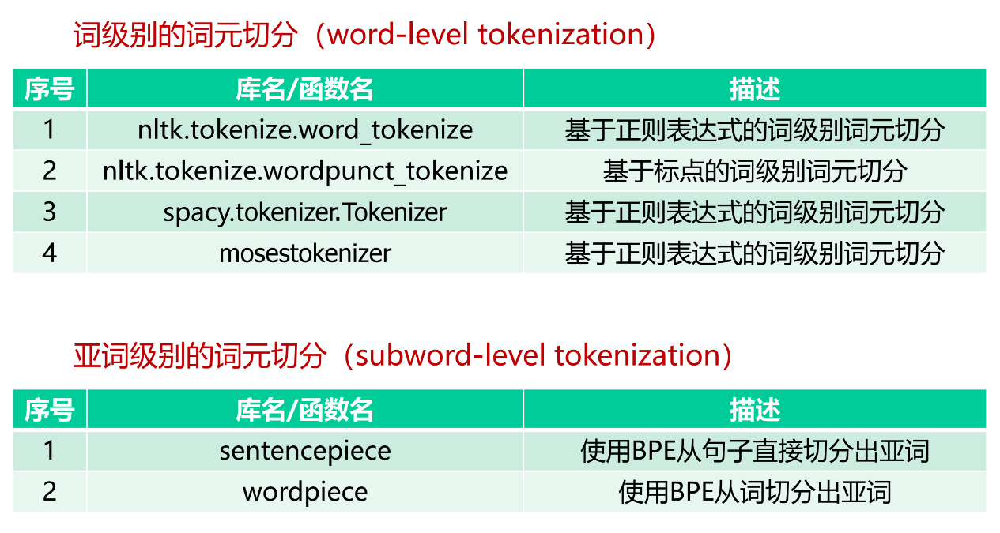
Lecture 6: 文本分类
文本分类概述
文本分类是自然语言处理中的基础任务。
任务定义、类型与应用
- 任务定义：
- 输入：视具体应用而定的不同类型、不同长度的文本
- 输出：预先定义的分类标签
- 分类：可以依照输入的篇幅、分类标签体系、应用场景等分类，以输入文段的篇幅为例
- 短文段：包含一句或几句话，如普通微博、推文等
- 中等文段：如英文阅读理解的文章等
- 长篇文段：如长篇的学术论文等
用卷积神经网络（CNN）做文本分类
我们可以利用 CNN（一维卷积）编码文本训练并做文本分类。
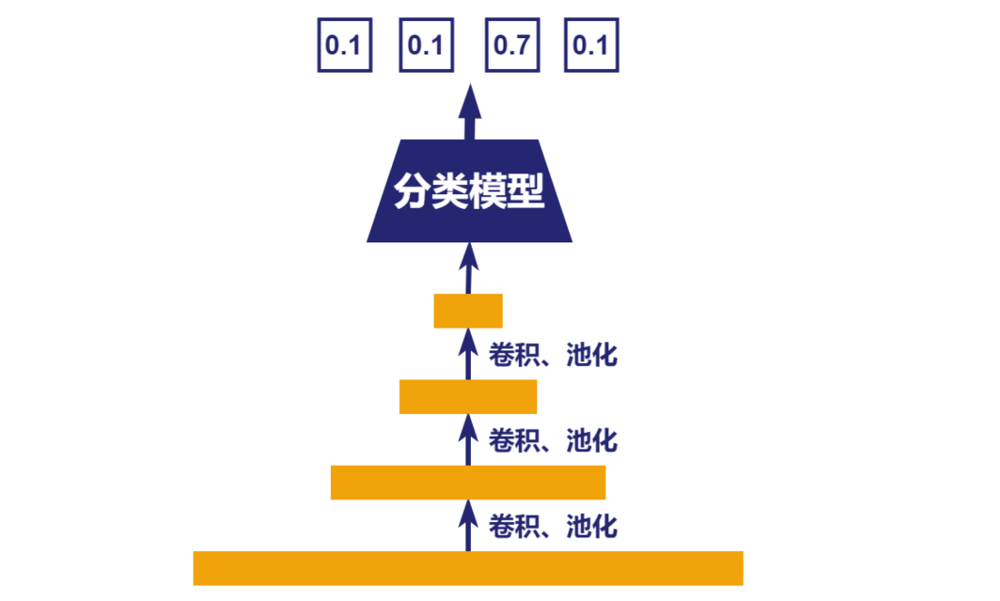
- 卷积层：卷积核以小窗口的形式在输入序列上移动，每个位置产生一个输出
- 计算方法：设窗口内的向量序列为 ，其中 ，单输出通道的卷积核 ，那么卷积层运算为 ，即计算窗口内向量序列与卷积核的内积
- 卷积核大小：通常为 ，其中 是卷积窗口大小， 是特征向量维度
- 输出特征图大小：
- 其中 为输入大小， 为卷积核大小
- 步长 (Stride)：控制卷积核滑动的距离
- 补零 (Padding)：在边界处补 0 可以使输入和输出大小保持相同
- 理解：
- 在模长相同时，内积度量了向量方向的相关性，输出值越大，说明窗口内容与卷积核定义的模式越相似
- 每个通道的卷积核可以看作特定的模式提取器，抽取特定的局部特征
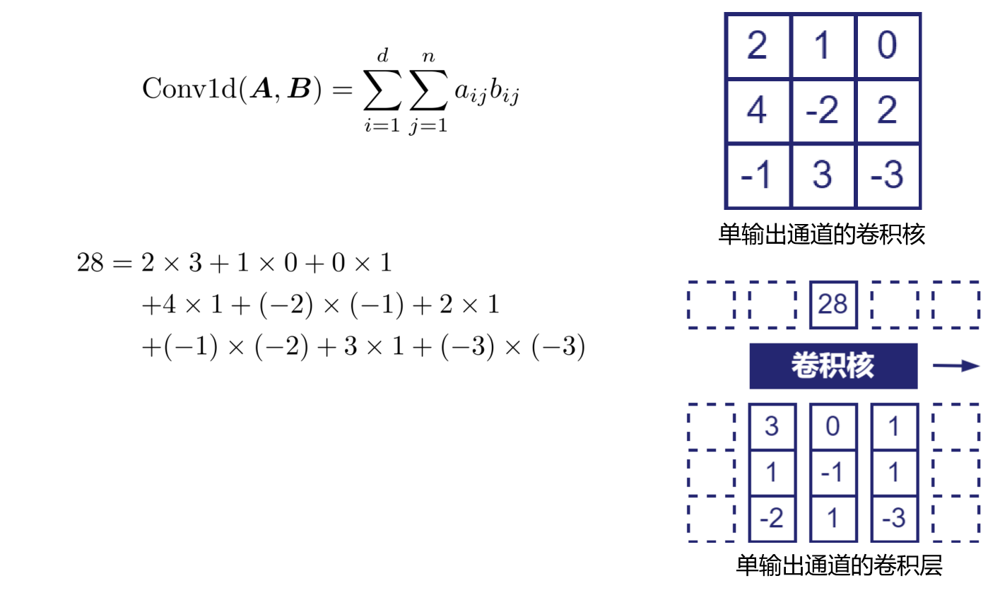
- 池化层：在每个激活图上单独运算，使特征表示（Representation）更小、更容易管理
- 常见操作：最大池化、平均池化、最小池化等
- 常规做法：通常设置池化大小与步长相同，使池化过程不重叠
- 池化大小：通常为 ，其中 是池化窗口大小
卷积、池化操作后，原输入文本被编码为长度缩减的特征序列，可用 LSTM 或者 DNN 继续处理。
用 FastText 模型做文本分类
FastText 是一种轻量的词向量模型和文本分类模型。
-
特点：仅需要在 CPU 上训练，模型轻量且预测速度快
-
核心问题：提取文本的 N-gram 特征，但当训练样本很多时，存储所有的 n-gram 的 embedding 不现实，内存消耗过大
-
解决方案：哈希桶
- 原理：将每个 n-gram 词通过一个哈希函数映射到一个哈希桶中，哈希值相同的 n-gram 词共享同一个 embedding
- 本质：是一种简单粗暴的方法，强行减少了需要存储的 n-gram 数量，虽然会有冲突，但能有效控制模型大小
-
工作流程：网络由输入层、隐藏层和输出层组成
- Step 1: 获取文档特征
- 输入是一个文档的 个 n-gram 特征
- 文档的整体特征向量 定义为所有 n-gram 特征的平均值
- Step 2: 将文档特征 输入线性层进行变换，获取隐层向量
- 其中 为 embedding 维度， 为隐藏层维度
- Step 3: 从隐藏层获得输出概率分布
- 其中 为类别数
- Step 4: 计算预测结果与真实标签的 Loss
- 其中 是待分类别的 ground truth 的 multi-hot 向量，同一段文本可以有多个类别
- Step 1: 获取文档特征
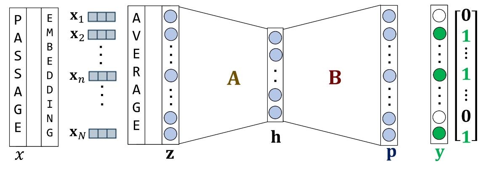
文本分类中的经典任务 - 情感分析 (Sentiment Analysis)
任务介绍
- 定义：识别、提取并量化文本中表达的情感倾向，包括情绪、态度和主观性
- 核心: 从细微的语言差异中捕捉人类情感
- 分类体系：
- 按粒度：可分为文档级、句子级等
- 按数量：二分类（如好/坏）或多分类（如积极、消极、中性）
- 示例：
- 积极：“这部电影太棒了！”
- 消极：“我对这次服务感到非常失望。”
- 中性：“天气很好。”
典型模型介绍：词袋模型 (Bag-of-Words)
这是情感分类中最基础、简单高效的模型。它直接忽略单词出现的顺序，仅考虑文本中出现的单词。
-
核心思想：将文本看作一个装满单词的“袋子”
- 忽略：词出现的顺序、语法和上下文
- 只关心：哪些词出现了，以及出现的频率
-
关键特性：
- 忽略词序：“我喜欢你”和“你喜欢我”在词袋模型中的表示是完全相同的
- 性价比高：算法简单、计算成本低，虽然效果有限，但容易理解和实现
-
工作流程：
- 构建词汇表：统计所有训练文本中的不重复单词，构成一个巨大的词表
- 文本预处理：转小写、去除标点符号、删除停用词（如 is, the 等）、词干提取/词形还原（如 felt -> feel）
- 向量化：将文本表示为一个长向量，长度等于词汇表大小，向量中每个位置的数值表示对应单词在文本中出现的次数
- 分类：使用分类器（可以是简单的统计模型，也可以是神经网络）根据向量判断情感标签
- 分类器的训练：将文本的向量表示 和对应的情感标签 做成一对对数据 训练分类模型
使用双向 LSTM 做情感分析
词袋模型丢失了语序信息，为了更精细地分类，我们需要能建模句式结构的深度模型。
-
LSTM 的优势：
- 捕捉结构特征：情感往往隐藏在否定词（not）、转折词（however）、反问、虚拟语气等结构中，词袋模型无法处理这些
- 处理长距离依赖：例如 “The movie sounds great… However, it can’t hold up.”（开头看起来是夸奖，最后转折才是真实情感），LSTM 能记住前面的铺垫并在最后进行反转
-
模型架构：
- Input：输入文本序列
- Embedding：将单词映射为词向量序列
- Bi-LSTM 层：使用双向 LSTM 处理序列
- 分别从前向后和从后向前编码，捕捉上下文信息
- Concat：拼接得到最后的输出序列
- Output：通过全连接层输出分类结果
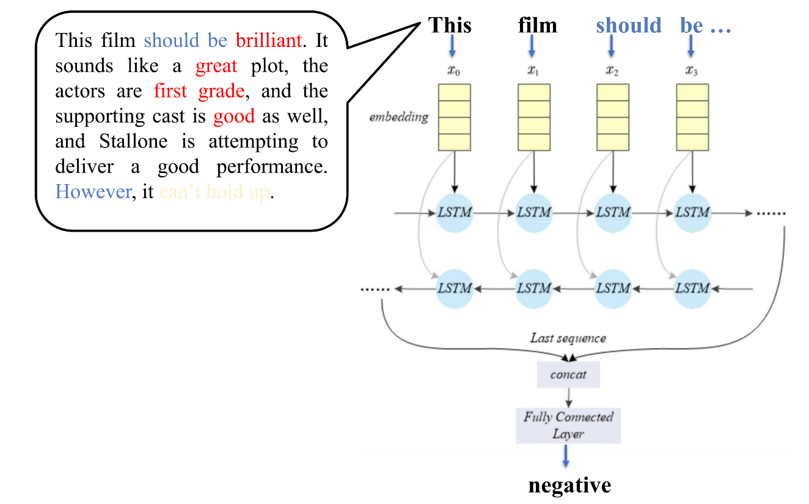
文本分类中的经典任务 - 文本蕴含 (Textual Entailment)
任务介绍
- 定义：判断两个句子（一个前提 Premise 和一个假设 Hypothesis）之间是否存在推理关系
- 核心：需要识别自然语言中的逻辑关系，这比简单的主题分类更复杂，需要对语义进行深度理解
- 关系类型：
- 蕴含 (Entailment)：前提为真时，结论必然为真
- 例：前提“一个女人在弹吉他”，假设“一个女人在弹乐器”
- 矛盾 (Contradiction)：两个句子表述了互相冲突的事实
- 例：前提“两只狗在追一只猫”，假设“没有动物在移动”
- 中性 (Neutral)：两个句子之间没有明确的蕴含或矛盾关系
- 例：前提“男人在街上跑”，假设“他跑得很快”
- 蕴含 (Entailment)：前提为真时，结论必然为真
- 方法与模型演进：
- 规则/树编辑：早期的传统方法
- 神经网络：引入 LSTM 和注意力机制
- 交互式建模 (DIIN)：专门设计交互层捕捉深层语义
- 预训练 Transformer：BERT, RoBERTa 等
- 大模型 Prompting：当前的最新范式
典型模型介绍：DIIN (Densely Interactive Inference Network)
DIIN 是一个专门针对文本蕴含任务设计的神经网络，其核心创新在于引入了 Interaction Space 来捕捉句子间更深层次的语义关系。
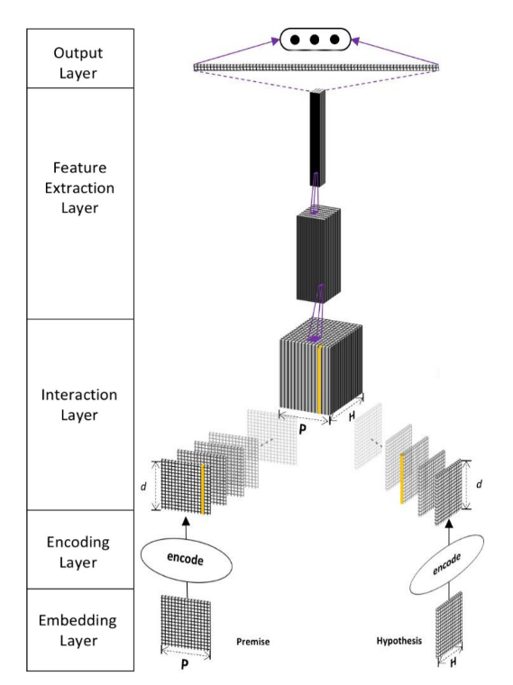
- 模型架构（由下至上）：
- Embedding Layer (嵌入层)
- 输入：Premise () 和 Hypothesis ()
- 处理：将 premise 和 hypothesis 的单词 token 编码成向量，通常使用预训练的词向量（如 Skip-gram 或 GloVe）
- Encoding Layer (编码层)
- 目的：捕捉句子内部的上下文信息
- 组件：由 Highway Network + Self-attention + Fuse Gate 组成
- 输出：经过上下文编码和融合后的 Premise () 和 Hypothesis ()
- Interaction Layer (交互层)
- 核心操作：构造一个 Interaction Tensor，表示premise 和 hypothesis 中所有词的两两交互
- 公式：，对特征向量进行逐对操作，提取词对之间的匹配特征
- Feature Extraction Layer (特征提取层)
- 架构：使用 DenseNet（一种带有残差连接的 CNN）
- 特点：每一层卷积都与前面所有层相连，能够从 Interaction Tensor 中有效提取高维特征
- Output Layer (输出层)
- 分类：将提取到的特征展平，通过多层感知机 (MLP) 进行最终的三分类（Entailment / Contradiction / Neutral）
- Embedding Layer (嵌入层)
Lecture 7: 文本检索
概述
什么是文本检索
- 定义：从大规模文档集合中，根据用户询问的内容 (Query)，找到与用户查询最相关的文档（Document）
- 典型应用场景：
- 搜索引擎：输入关键词，返回相关网页（如 Google, Baidu）
- 问答系统：根据输入的问题，检索相关的段落进行回答
- 推荐系统：根据用户的兴趣，检索相关的内容进行推荐
文本检索方法的分类
现代文本检索的核心逻辑是将 Query 和 Document 都表示为向量形式，并通过计算向量的点积来衡量相关性。根据向量表示形式的不同，文本检索方法可分为两大类：
-
稀疏检索 (Sparse Retrieval)：
- 核心特点：基于词汇匹配，文档被表示为稀疏向量，向量中只有出现的词对应的位置有值，其余为 0
- 文档向量维度：等于词表大小，通常非常大（几万到几十万维）
- 代表方法：TF-IDF、BM25
-
稠密检索 (Dense Retrieval)：
- 核心特点：基于语义理解，文档被表示为稠密向量，即用神经网络将文本编码为低维的实数向量
- 文档向量维度：等于模型维度，通常较小（几百到几千维）
- 代表方法：Contriever、DPR、BGE
稀疏检索器（Sparse Retriever）
大规模稀疏检索的技巧：倒排索引（Inverted Index）
倒排索引是解决大规模稀疏检索效率问题的核心技术，也是搜索引擎背后的基础架构。
-
必要性：以搜索引擎为例，当我们在拥有海量文档的数据库中搜索关键词（如“姚明”）时，存在两种方案：
- 方案 1：暴力遍历
- 做法：根据关键词，遍历所有文档，逐个检查是否含有关键词
- 缺点：在大规模数据下，时间与计算复杂性极大，效率不可接受
- 方案 2：倒排索引 (Inverted Index)
- 做法：提前遍历所有文档，建立“关键词 → 文档”的映射关系
- 核心：将“文档包含哪些词”转化为“哪些文档包含这个词”
- 优点：搜索时基本相当于一次查表，时间复杂度极低
- 方案 1：暴力遍历
-
构建过程：
- 提前遍历所有文档，储存每个文档中出现的关键词
- 对每一个关键词，记录它出现过的文档标号
-
检索过程：只需要对用户 Query 中的关键词依次查询出现过的文档，并对结果取交集即可
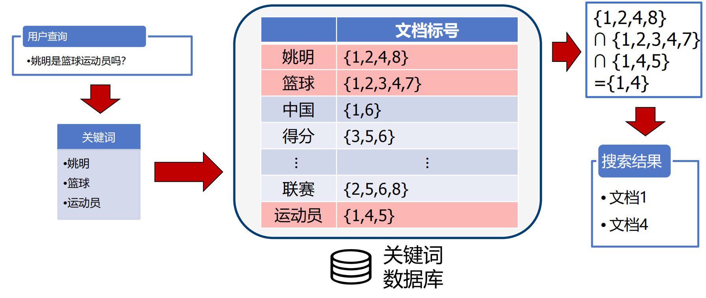
TF-IDF
TF-IDF 是稀疏检索器的核心算法之一，主要解决了倒排索引中“如何选取关键词”的问题。
-
核心思想：根据词汇的重要性进行加权匹配
-
词频 (Term Frequency, TF)：衡量某个词在当前文档中有多重要
- 定义：表示某一个词在给定的文档中出现的频率
- 逻辑：词语在文档中出现的频率越大，则其关键程度越高
- 计算公式：词语 在文档 中的词频为
- 其中 是词语 在文件 中出现的次数， 是文档 的长度
- 局限性：一些常用词（如“是”、“的”）会有极大的词频，但并没有包含有效信息，只看 TF 会导致这些无意义的词占据高分
-
逆向文档频率 (Inverse Document Frequency, IDF)：衡量某个词在整个语料中有多重要
- 逻辑：越通用的词语（在很多文档里都出现），权重越低；越稀有的词语，权重越高
- 计算公式：
- 其中 是语料库中的文档总数， 是包含词语 的文档数目
- 作用：通过 IDF 加权，像“的”、“是”这种在所有文档都出现的词，其 IDF 值会趋近于 0，从而被过滤掉
-
TF-IDF 综合评分：
- 一个词对一篇文档的重要性 = 它在这篇文档的频率 × 它在语料库的稀有度
-
查询相关度评分：对于一个包含关键词 的查询 ，它与第 个文档 的相关度得分为所有关键词 TF-IDF 值的总和
-
局限性：
- 本质还是词袋模型：没有考虑词的位置信息与语义信息
- 假设简单：IDF 简单地假设“文档频率越大，单词越无用”，这在某些特定情况下可能不准确
BM25
BM25 (Best Matching 25) 是工业界最常用的稀疏检索算法之一，它是对 TF-IDF 的改进，重点解决了词频无限增长和文档长度偏差的问题。
-
核心公式：在 TF-IDF 的基础上，对 TF 项进行了一系列改进
- 其中 是当前文档长度， 是所有文档的平均长度， 和 是人为指定的超参数
-
改进点一：词频饱和 (TF Saturation)
- TF-IDF 的问题：在 TF-IDF 中，词频越高，得分线性越高，但实际上，一个词在文档中出现 200 次的重要性并不是出现 100 次的两倍
- BM25 的改进：
- 削权：对特别高频的词进行“饱和”处理，使其得分增长逐渐趋缓，不再无限增加
- 的作用：限制 TF 项的最大值，分子中的 就是 TF 项能逼近的极限值； 越大，增长曲线越平滑，词频对单词权重的影响越小
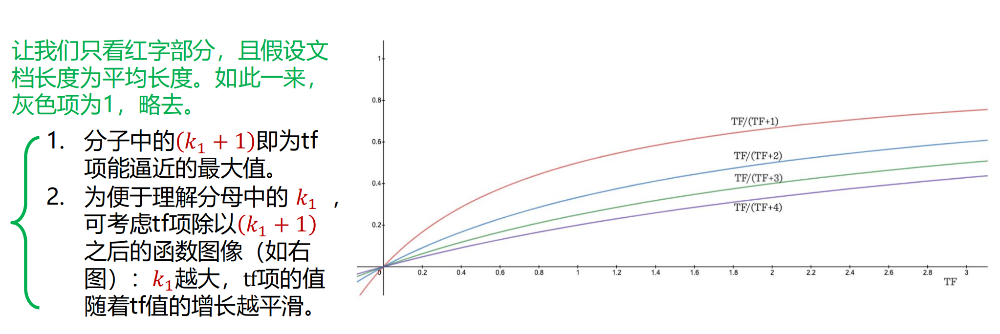
- 改进点二：文档长度归一化 (Document Length Normalization)
- TF-IDF 的问题：长文档天然容易包含更多词，导致词频更高，但一个词在短文档中出现 1 次，通常比在长文档中出现 1 次包含的信息量更大
- BM25 的改进：
- 长度加权：引入文档长度 与平均长度 的比值，对 TF 进行惩罚
- 的作用：调整文档长度对得分的影响， 越大，文章长度对单词权重的影响越大，即对长文档的惩罚越重
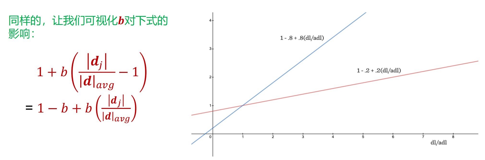
- BM25 总结：
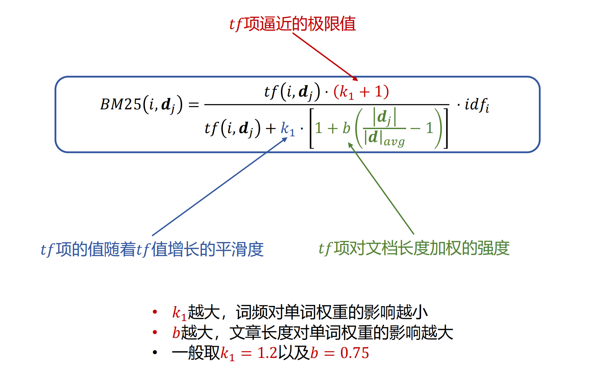
稠密检索器（Dense Retriever）
- 定义：使用神经网络将文本编码为低维稠密向量，通过向量点积来衡量语义相似度
- 优势：相比高维稀疏向量，大大提升了检索效率，并且能够捕捉词汇之外的语义信息
- 模型架构：以 BERT 的架构为例
- 输入：自然语言文本（Query 或 Document）
- 分词 (Tokenizer)：处理成 Token 序列，加上
[CLS]和[SEP]标记 - 编码 (Encoder)：通过 BERT 等预训练 Transformer 模型进行编码
- 输出表示：通常取
[CLS]标记对应的输出向量，作为整个文档或查询的语义表示
Contriever
Contriever 是一个无监督的稠密检索模型，它的核心贡献在于通过巧妙的对比学习 (Contrastive Learning) 策略，在没有标注数据的情况下训练出了强大的检索器。
- 训练框架：对比学习
- 目标：拉近相关文本（正样本）的向量距离，推远不相关文本（负样本）的向量距离
- 样本构成：每个训练样本是一个三元组
- ：查询 (Query)
- ：正样本文档 (Positive Document)，与 相关
- ：负样本文档 (Negative Document)，与 不相关
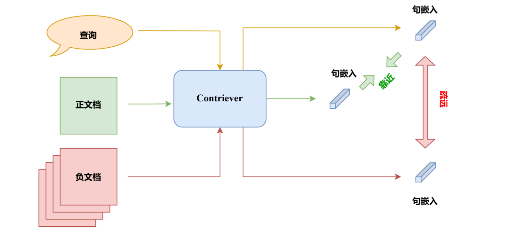
-
损失函数：使用 InfoNCE Loss 形式的损失函数
- 分子部分：查询与正样本的相似度（越大越好）
- 分母部分：查询与所有样本（正样本+负样本）的相似度总和
- 温度参数 ：控制分布的尖锐程度， 越小，分布越尖锐，模型越确定； 越大，分布越平滑，模型越不确定
-
正样本的构建策略：对于一个给定的文档库，如何无监督地构建查询和正样本
- 逆向填空任务 (Inverse Cloze Task, ICT)
- 做法：从一篇文档中，随机抽取其中一段话作为 Query，把文档剩下的部分作为 Positive Document
- 逻辑：一段话通常能概括或推导出上下文的内容
- 独立裁剪 (Independent Cropping)
- 做法：从同一篇文档中，独立随机地采样两个片段，分别作为查询和文档
- 特点：两个片段可以有重叠，也可以不重叠；通常片段长度为原文档的 20%-80%
- 逻辑：同一篇文档里的不同部分，语义是相关的
- 逆向填空任务 (Inverse Cloze Task, ICT)
-
负样本的构建策略：对于一个给定的文档库，如何无监督地构建查询和负样本
- 同批内采样 (In-batch Sampling)
- 做法：在一个 Batch 内，假设不同文档之间是不相关的，对于 Query ，除了它对应的 是正样本，Batch 内所有其他的 全部当作负样本
- 优点：计算高效，充分利用显存。
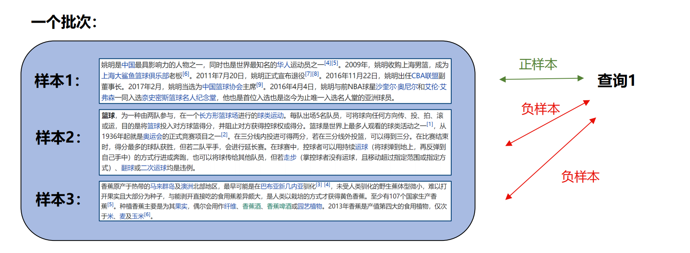
- 跨批次采样 (Across-batch Sampling)
- 动机：Batch size 有限，负样本数量不够多
- 做法：维护一个内存队列存储历史批次的文档向量
- 训练时，从内存库中随机抽取 个向量作为负样本
- 当前 Batch 计算完后，把文档向量放入内存库
- 优点：可以获得极大量的负样本，提升对比学习效果
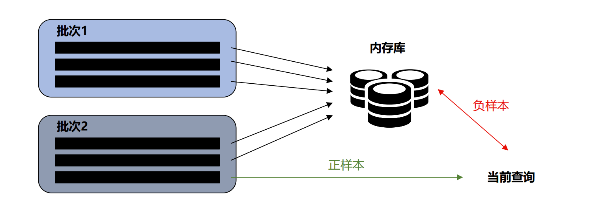
- 同批内采样 (In-batch Sampling)
BGE
相比于 Contriever，BGE 引入了更加丰富的训练任务，旨在通过更多样化的数据和策略来增强模型能力。
-
训练流程：
- 阶段 1：预训练 (Pre-training)
- 数据：使用了 1.2B 的大规模预训练语料
- 损失函数：使用和 Contriever 完全相同的对比损失函数
- 阶段 2：微调 (Fine-tuning)
- 数据：使用了有监督数据和合成的长文数据
- 核心策略：使用三种向量表示得到一个混合分数，然后再使用和之前完全相同的损失函数
- 阶段 1：预训练 (Pre-training)
-
混合分数计算：在微调阶段，模型计算 Query 和 Document 的相似度时，融合了三种不同维度的分数
这三种分数分别对应三种不同的向量表示形式。设查询和文档经过 BGE 模型最后一层输出的向量分别为 和 。
-
密集检索 (Dense Retrieval)：
- 原理：经典的稠密向量匹配
- 计算：直接取
[CLS]标记对应的向量 ( 和 ) 进行点积 - 公式：
- 特点：捕捉全局语义信息
-
词汇检索 (Lexical Retrieval)：
- 原理：一种可学习的稀疏检索
- 计算：
- 通过一个可学习的映射将每个 Token 的向量映射为一个标量权重
- 计算查询和文档中重合词元的权重乘积之和
- 公式：
- 特点：模拟了传统稀疏检索（如 BM25）的精确匹配能力，但权重是学出来的
-
多向量检索 (Multi-Vector Retrieval)：
- 原理：细粒度的交互匹配（类似 ColBERT）
- 计算：
- 将查询和文档的所有 Token 向量经过投影矩阵 映射
- 对于查询中的每一个 Token，在文档中找到与其相似度最高的词元，然后将这些最大相似度求和
- 公式：
- 其中 和 分别表示查询和文档的长度， 和 分别表示查询和文档经过 BGE 模型和投影矩阵的多向量表示
- 特点：捕捉更加精细的局部交互信息，解决单向量无法承载复杂语义的问题
最终将三种分数加权即可得到最终的混合分数。
Lecture 8: 序列标注
序列标注简介
序列标注（Sequence Tagging）是 NLP 中最基础的任务形式之一，是一系列具体 NLP 任务形式的抽象。
- 定义：为输入序列中的每一个元素（通常是一个词或子词）分配一个特定的标签
序列标注任务举例
- 词性标注 (POS tagging)：为句子中的每个词分配其词性标签（如名词、动词、形容词等）
- 例子: John (NNP) runs (VBZ) fast (RB).
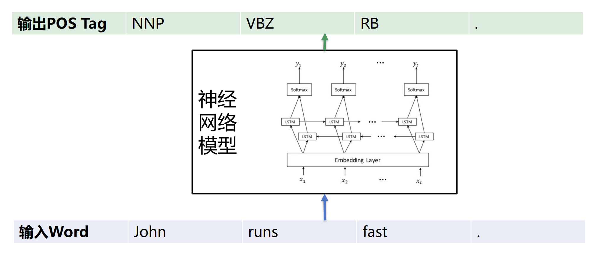
- 命名实体识别 (Named Entity Recognition)：识别文本中具有特定意义的命名实体，如人名、地名、机构名、时间等
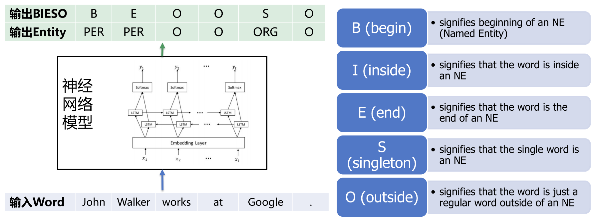
- 关键词抽取 (Keyword Extraction)：从文档中提取能代表其核心内容词汇或短语
- 通常每个词都会被打一个 BIO 标签（类似 NER），以指示它是否属于关键词
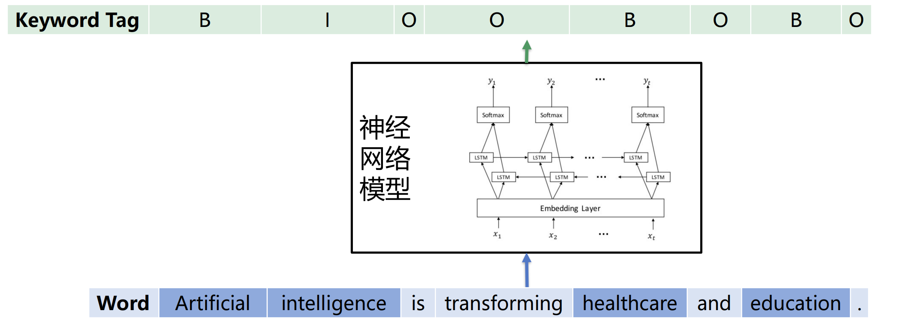
- 语义角色标注 (Semantic Role Labeling, SRL)：标注句子中谓词、论元及其语义角色（如 giver、receiver 等）
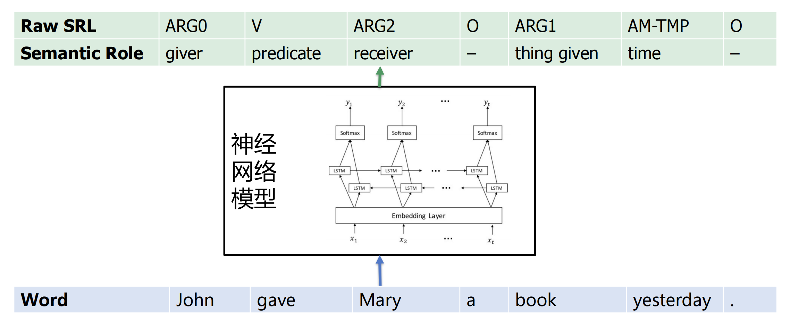
- 机器阅读理解 (Machine Comprehension)：给定一个上下文段落和一个问题，模型需要预测答案在上下文中的起点和终点索引
- 这可以看作是为上下文中的每个词预测它是否是答案的开始或结束
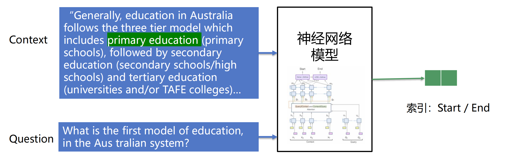
序列标注任务的共同形式
- 输入：，例如一句话中的每个词或子词
- 输出： ，与输入对应的标签序列
- 目标：学习一个映射函数 ，使得在给定的输入序列中，为每一个元素（通常是一个词或子词）分配相应的标签，以捕获序列中元素的语义或语法属性
经典序列标注任务: 词性标注
任务介绍
- 目标：为文本序列中的每个词分配其相应的词性标签（如名词、动词、形容词等）
- 例子：
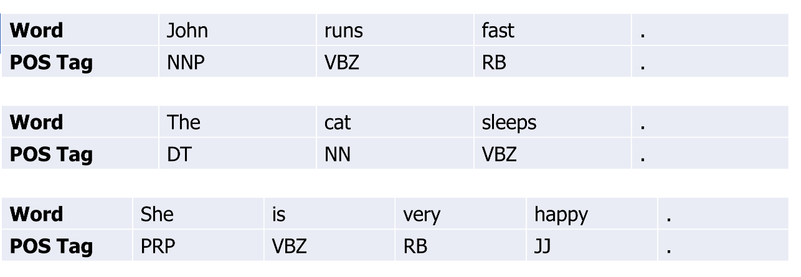
-
词性与词性标注：
- 词性 (Part-Of-Speech, POS)：指词的语法分类
- 词性标注 (POS Tagging)：用算法自动将句子中每个词的词性判断出来的过程
- *词性划分的特点：具有层次性，且不同的数据集使用不同的类别集合，通常有几十种类别
-
传统统计模型：隐马尔可夫模型 (HMM)
- 核心思想：将词性标注视为解码问题，寻找最可能的隐藏状态（词性标签）序列
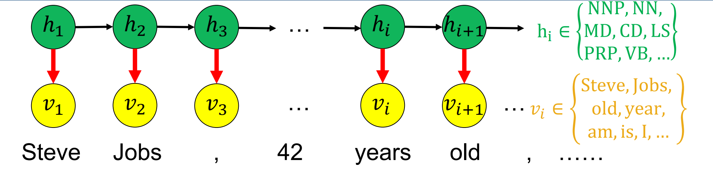
- 公式：设 是隐藏状态（词性序列）， 是可观测状态（词序列）
使用 LSTM 模型进行词性标注
-
基本思路：使用循环神经网络（RNN）的变体（LSTM 或 GRU）按顺序读取文本，每一步生成一个隐藏表征 ，然后通过一个 softmax 分类层预测当前词的标签
-
单向 RNN 模型 (LSTM / GRU)：可以以流的方式读取文本，边读取边生成标注，但只能依据前文信息进行标注
- 优点：实时性好，适用于语音识别、实时翻译等场景
- 缺点：无法利用后文信息修正前文的标注
- 例如，对句子 “I have got a raspberry pi device.” 中的 “pi” 进行标注时，不知道下文 “device” 会影响其词性
-
双向 RNN 模型 (Bi-LSTM / Bi-GRU)：从前后两个方向读取序列，将两个方向的隐藏表征拼接，从而融合了整个序列的上下文信息
- 优点：性能通常显著优于单向模型
- 缺点：需要看到整个句子后才能开始标注，实时性差，适用于大部分对实时性要求不高的任务（如 POS, NER）
-
多层叠加的 RNN：将一层 RNN 的输出序列作为下一层 RNN 的输入，堆叠起来，也可以堆叠双向 RNN
- 优点：深层网络能学习更复杂的特征，通常比单层模型有更好的性能
-
融合模型：LSTM + CRF
- 动机：单纯的神经网络模型是逐点分类，可能产生不合逻辑的标签序列，条件随机场（CRF）可以考虑标签之间的转移关系
- 结合方式：使用 Bi-LSTM 获取每个词的上下文相关表征，然后将这些表征输入 CRF 层，由 CRF 层学习标签间的约束规则，并输出全局最优的标签序列
评价指标：分类精度
词性标注通常使用准确率作为评估指标。
-
分类：总体准确率 (Overall Accuracy) 、分标签准确率 (Per-tag Accuracy)
-
公式：
- 其中 为指示函数，预测正确时为 1，错误时为 0
经典序列标注任务: 命名实体识别
任务介绍
-
目标：识别文本中的命名实体（Named Entity），通常为人名、地点、机构、时间等
-
例子：
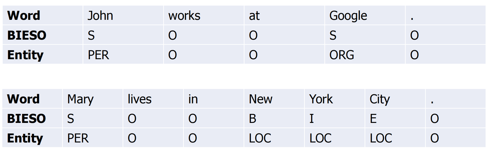
其中
PER代表人名，ORG代表组织机构名，LOC代表地名。
评价指标：Precision、Recall、F1
NER 的性能评估比词性标注更复杂，需要同时考虑实体的边界和类型是否正确。因此，准确率不再适用，通常采用精确率、召回率和 F1 值。
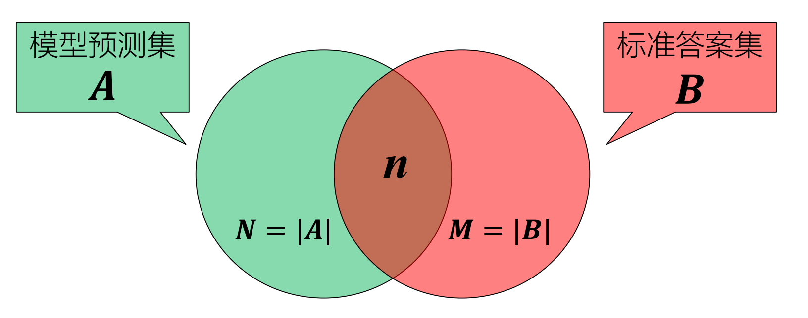
假设系统输出 个实体，其中，正确的结果为 个，标准答案中实体的个数为 个。
- 查准率 (Precision)：又称准确率、使用者精度，表示在所有预测出的实体中，预测正确的实体所占的比例
- 查全率 (Recall)：又称召回率、生产者精度，表示在所有真实的实体中，被正确预测出来的实体所占的比例
- F1 值：精确率和召回率的调和平均数，是评估 NER 系统的核心指标
- 例题：假设某个 NER 模型在一测试集文本上检测到 5260 个实体，而标准答案中，这段话含有 4510 个实体，根据这个答案，模型输出的结果中有 4120 个是正确的，则 Precision、Recall 跟 F1 分别是：
经典序列标注任务: 机器阅读理解
任务介绍
- 定义：给定一段上下文 和一个问题 ，模型需要预测出答案在上下文中的起点与终点的位置 ，即
- 转换为序列标注任务：对上下文中的每一个单词，预测其作为 start 跟 end 的概率，用概率最大的 start-end 组合作为答案
经典模型：BIDAF
BIDAF 是机器阅读理解领域的经典模型，其全称为 Bidirectional Attention Flow。
- 核心思想：这是一个多阶段的分层模型，在不同粒度级别上表示上下文，并使用双向注意力流机制来获得 query-aware 的上下文表示
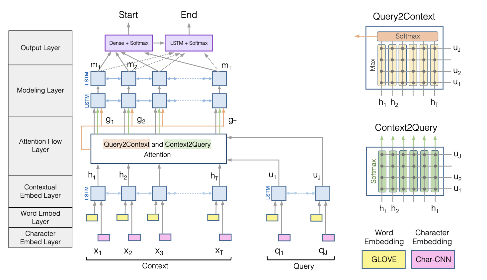
- 模型架构：从不同细粒度上捕捉 context 和 query 的信息
- Character Embed Layer：使用字符级 CNN 将每个单词映射到向量空间
- Word Embed Layer：使用预训练 word embedding model 将每个单词映射到向量空间
- Contextual Embed Layer：分别使用双向 LSTM 来利用周围单词的上下文线索，以改进单词的 embed，然后连接二者的输出
- Attention Flow Layer：将 query 和 context 向量拼接起来，并通过双向注意力机制更充分地捕捉两者之间的交互信息
- Modeling Layer：使用双层 bi-LSTM 编码 query-aware 上下文单词的表征
- Output Layer：输出层和任务有关，对于 QA 任务，输出开始和结束 index 的概率分布
- Model 的输出经过一个 MLP 来预测 start index 的概率 start
- Model 的输出经过一个 LSTM + 一个 MLP 来预测 end index 的概率 end
- 为了确保结束位置不小于起始位置，模型计算所有合法 组合的联合概率，并选择概率最大的组合：
评价指标：Exact Match 和 F1
-
Exact Match (EM)：预测答案与标准答案（ground truth）在字符串上完全一致时，得分为 1，否则为 0
- 在评估时，会对答案进行大小写、标点、冠词等标准化处理
- 当数据集中某个问题存在多个可接受答案（如同义表达），系统会取最高分数作为最终结果
-
F1 Score：基于答案中词的重叠率，衡量预测答案和标准答案之间的部分一致程度
- 定义：设 是预测答案的词集合， 是标准答案的词集合，则
- 例子：
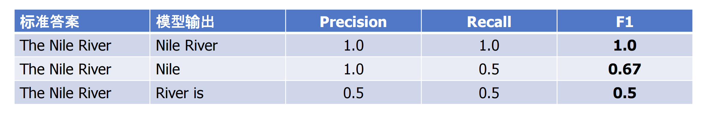
- 定义：设 是预测答案的词集合， 是标准答案的词集合，则
Lecture 9: 机器翻译与 Transformer 模型
机器翻译概述
- 机器翻译 (Machine Translation, MT)：用计算机把一种语言（源语言, Source Language）翻译成另一种语言（目标语言, Target Language）的一门技术
机器翻译中的困难与挑战
- 机器翻译的困难：信达雅
- 信 (Faithfulness)：不歪曲原文意义，不遗漏，不随意增减内容
- 达 (Expressiveness)：译文通顺自然，符合目标语言表达习惯
- 雅 (Elegance)：用词得体，表达优美
统计机器翻译 (Statistical Machine Translation, SMT)
- 总体思想：利用双语对照数据，基于数据驱动 (data-driven) 学习一个统计翻译模型，使用该模型作为解码器，将源语言测试数据翻译为目标语言译文
- 核心思想：用概率模型来建模翻译过程，使用数据学习翻译规则
- 语料资源：
- 平行语料 (Parallel Corpus)：句子级对齐，用于构建翻译模型
- 单语语料 (Monolingual Corpus)：建模 n-gram 概率，用于构建语言模型
- 概率模型：给定源语言句子 ，目标是找到目标语言句子
由贝叶斯公式知，
其中 由翻译模型给出， 由语言模型给出
- 解码过程：给定源语言句子 ，枚举所有候选，对每个候选 计算 ，选择概率最大的译文
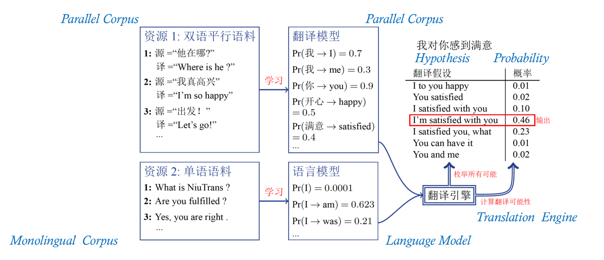
神经机器翻译 (Neural Machine Translation, NMT)
- 核心思想：把平行语料当作 sequence-to-sequence 输入，用神经网络直接学习从源句到译文的映射，不再显式依赖人工规则
- 基本模型：seq2seq 模型，即先读取一段文本，再根据这段文本生成新的文本
- 输入：源语言序列
- 输出：目标语言序列
- 模型架构：Encoder–Decoder 架构，其中 Encoder 处理源文本，Decoder 生成目标文本
- 学习目标：最大化概率
使用 LSTM/GRU 进行机器翻译
-
Encoder 的任务：
- 逐步读入源句，得到一系列隐藏状态
- 把最后状态（或某个聚合）当作整句语义表示
-
Decoder 的任务：从一个初始状态开始，逐步生成目标词
- 每步根据上一步状态及上一步生成的词，预测下一个词
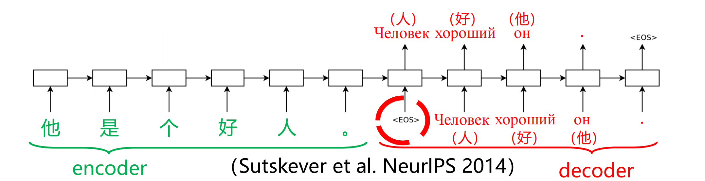
- LSTM/GRU 等 RNN 的问题：
- 容量瓶颈：源句信息需要保存在少量状态中，中途还要不断写入与目标无关的新信息，导致早期的重要信息容易被遗忘
- 长程关系难以优化：目标端的监督信号要穿过很多 recurrent step 才能影响到源端对应词，路径太长，RNN 的梯度爆炸/消失导致训练不稳定，长依赖难学
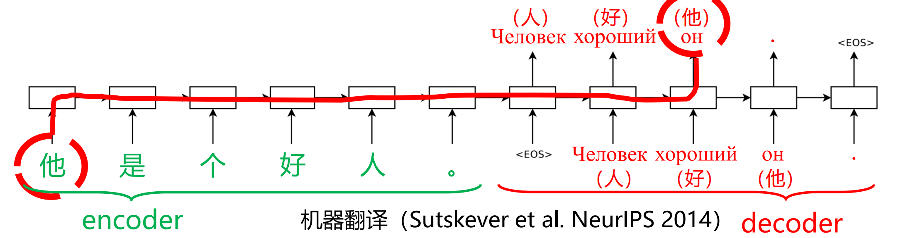
- 一些过渡性改进：在 RNN 中添加各种各样的 skip connection，来减少梯度传播所需经过的步数
Attention 机制
真正解决 RNN 这些问题的，是 Attention 机制。
-
动机：人在翻译长句子的某一个词的时候，更关心这个词对应的原文中相关的几个词，而并不关心别的上下文
- 也就是说，翻译的关键在于找到当前词对应的原文
-
Attention 机制：Decoder 在第 步预测时，不只使用前一步的状态 ，还要使用 Encoder 的所有状态（即 ）的线性组合 ，其中每个 所分到的线性组合权重由 和 共同决定
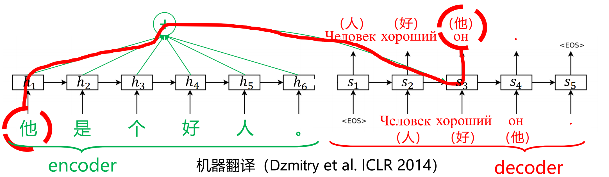
- 核心公式：
- 普通 RNN：，其中 是任意非线性函数，代表 RNN 中一步的运算
- 带有 Attention 的 RNN：
其中 是第 步生成目标词时，对源位置 的注意力权重，该权重由 Softmax 得到：
其中 是任意非线性函数，可由 NN 实现
- Attention 解决的问题：
- 信息瓶颈显著缓解：不再要求把整句压缩进一个向量
- 长距离依赖更容易学：目标词的监督信号可以更直接作用到相关源位置
Self-attention
-
动机：在没有 Decoder 的场景下（如文本分类、情感分析等），如何使用 Attention
-
Self-attention 机制：对每个 做加权求和，权值 由一个两层的全连接 NN 输出，再通过 softmax 得到
最终的句子表示为：
-
多头自注意力：不止计算一个加权平均，而是同时计算多个
- 进一步改进：整个模型只用 attention，得到 Transformer
- 完全撤掉底下的 RNN
- 对每一个 计算一组多头自注意力机制所得到的向量集
- 利用额外的 positional embedding 弥补撤掉 RNN 所引起的位置信息缺失
Transformer 模型
- 总体结构：一个完全基于 Attention 的 Encoder–Decoder 架构模型
- Encoder：堆叠 N 层，每层包含：
- Multi-Head Self-Attention
- Feed Forward Network
- Add + LayerNorm
- Decoder：堆叠 N 层，每层包含：
- Masked Multi-Head Self-Attention
- Encoder-Decoder Attention
- Feed Forward Network
- Add + LayerNorm
- Encoder：堆叠 N 层，每层包含：
- Scaled Dot-Product Attention：给定 （Query）、（Key）、（Value），计算注意力：
- 理解： 表示当前词想问什么， 表示每个词提供什么信息， 表示真正的内容，匹配程度由 决定
- 除以 的原因：防止点积过大，保证梯度稳定
- 对于 Encoder-Decoder Attention， 来自于 Decoder 的状态，而 和 来自于 Encoder 最后一层的状态
1 | |
- 多头注意力 (Multi-Head Attention)：每个头独立进行缩放点积注意力运算，将所有头的输出拼接并经过线性变换得到最终输出
- 优势：不同 head 捕捉不同关系，提高表达能力
1 | |
- 位置编码 (Positional Encoding)：
- 问题：Attention 本身不考虑词序，输入顺序打乱，输出不变，因此本质上是 bag-of-words，必须补充位置信息
- 解决方案：额外使用位置编码，并将其与词向量相加
其中 表示词的位置
1 | |
1 | |
评价指标
- 人工评价翻译质量：最直接，但有如下缺点：
- 太慢，效率低
- 不能反映不同模型间精细微小的性能差别
- 难以进行大规模翻译质量评估
BLEU score 是目前通用的、标准化的机器翻译模型评价指标。
-
核心思想：衡量模型翻译与参考翻译之间的重叠程度
-
Unigram Precision：
- 定义：
- Modified Unigram Precision: 将分子中每个 unigram 计入的次数设置上限，不得超过该 unigram 在某一个 reference 中重复出现的最大次数
- 例子：
- 定义：
-
N-gram Precision：
- 定义：
- Modified N-gram Precision: 将分子中每个 N-gram 计入的次数设置上限，不得超过该 N-gram 在某一个 reference 中重复出现的最大次数
- 区别：Unigram Precision 更多反映翻译的充分度，N-gram Precision 更多反映翻译的流畅度
- 定义：
-
BLEU score：
- 组合多个 N-gram 精度：使用几何平均，因为 Unigram 精度一般较高，直接取平均会导致其它 N-gram 的重要性被淹没
- 长度惩罚 (Brevity Penalty)：如果模型总是输出特别短的句子，会提高 precision，因此乘以一个惩罚因子
其中 是模型预测的句子的长度， 是标准翻译中句子的长度
- BLEU 公式：
其中 是修正的 n-gram 精度， 是 n-gram 的权重（通常取 ）， 是考虑的最大 n-gram 长度（通常取 4）
- BLEU-k 指的是取了 1~k-gram 的几何平均后得到的值
常用实现
https://github.com/huggingface/transformers
Lecture 10: 文本生成
文本生成概述
文本生成（Natural Language Generation, NLG） 是自然语言处理（NLP）的一个核心任务。
什么是文本生成
- 目标：通过模型生成符合语义、语法和上下文逻辑的自然语言文本
- 不仅是造句，还需要理解语境并创造性地进行生成
- 方法：通常基于语言模型（Language Model）
- 现代文本生成模型（如 GPT 系列、LLaMA、Qwen 等）通常使用 Transformer 架构，通过大规模语料训练学习语言规律
文本生成的应用场景
-
传统应用场景：
- 文本摘要：
- 输入：一篇长文档
- 生成：一段简短、精炼的摘要
- 生成式问答：
- 输入：问题（+相关上下文）
- 生成：（思考过程+）答案
- 机器翻译：
- 输入：文本序列（源语言）
- 生成：翻译后的文本序列（目标语言）
- 文本摘要：
-
新的应用场景：代码生成、故事编写、互动游戏等
自回归（Autoregressive, AR）文本生成
- 生成方式：
- 语言模型 在每个时间步 ，接受输入 token 序列 并输出一个新 token
- 下一个时间步 ，模型基于生成 和 ，继续生成下一个 token
- 通过这种方式不断生成，最终生成一个段落
非自回归（Non-autoregressive, NAR）文本生成
- 生成方式：并不遵从自左向右的生成顺序，而是采用树结构生成、乱序生成等其他方式
- 现状：这类生成方式暂时还未成为文本生成的主流方式
语言模型的解码（Decoding）
对于模型 及其参数 、词表 ，模型先计算 token 的预测分数 ，再对 做 Softmax 得到生成 token 的概率：
得到的 是为 在词表 上的概率分布。
- 解码 (Decoding)：根据概率分布 确定 的过程
- 解码方法 从概率分布中选取一个 token 作为 ，即：
贪心解码（Greedy Decoding）
- 解码方式：选取概率最大的 token 作为
- 问题：每一步都选择局部概率最高
- 一旦生成错误就无法回头
- 容易陷入局部最优，导致思维僵化
- 自我强化效应：一旦模型开始重复某个词或短语，随着重复次数的增加，重复概率会不断上升，自我强化，最终陷入循环
- 解决方法：
- 保留一些生成路径，增加搜索空间，从而跳出局部最优（对应束搜索）
- 增加随机性，让模型跳出重复循环（对应 Top-k 和 Top-p）
束搜索解码（Beam search Decoding）
- 解码方式：在每个解码步骤中，保留 个最优的生成路径
- 的选取：一般取 ； 相当于贪心解码
- 最优路径的评判：计算对数概率 作为评判分数
- 分数均为负数，代表了序列的整体概率，越高越好
- 束搜索解码不保证找到最优解
- 优势：能跳出重复循环
- 应用：适合文本摘要、机器翻译等非开放性生成任务
- 束搜索的目标是找到整体概率最高的序列
- 但在故事生成等开放性生成任务中，概率最高的路径并不一定是最优的，需要通过随机采样来生成 token
随机采样（Ramdom Sampling）
- 解码方式：从概率分布中采样一个 token 作为 ，即
- 优势：
- 给生成加入了随机性
- 内容不僵化，适合开放性生成任务
- 问题：可能采样到词表内的任意 token，但大多数 token 不适合当前语境
- 语言模型产生的概率分布是长尾分布，包含大量低概率项
- 这些错误 token 的总概率较大，容易被采样到
Top-k 采样（Top-k Sampling）
- 采样方式：仅在前 个 token 中采样一个 token
- 的取值：一般选取 ，需要具体任务、模型进行调整
- 越大，生成内容更多样、激进
- 越小，生成内容更稳定、保守
- 相当于 Greedy Decoding
- 问题：Top-k 保留的选项可能太多或太少
Top-p 采样（Top-p Sampling）
- 采样方式：在前 累积概率的 token 中进行采样
- 的取值：一般选取
- 如取 ，将所有 token 按其概率从高到低排序后，在前 90% 的概率中进行采样
- 优势：采样能够生成更加生动的故事
调整概率分布：温度 T
- 温度 ：加入温度项 可以调整模型输出的概率分布
- 束搜索和采样解码均可以调整温度
- 作用：
- 减小 ，分布更尖锐，生成的内容更安全，多样性低
- 增大 ，分布更平均，生成的内容多样性高
小结
- 用于非开放性任务：贪心解码、束搜索解码、Top-k 采样
- 主流解码方案：Top-p 采样 + 温度系数 T
通过解码算法，语言模型从“概率计算器”变为真正的“语言创作者”，且不同解码方案和参数能够生成不同风格和不同性质的文本。
Lecture 11: 预训练语言模型
回顾：词向量、语言模型
-
词向量：
- 动机：
- 理解自然语言需要对单词进行建模
- 独热向量维度爆炸且不能反映词间关系
- 经典方法：
- CBOW：邻域词预测中心词
- Skip-gram：中心词预测邻域词
- 传统词向量的问题：静态，上下文无关
- 使用时需要引入复杂结构来建模上下文信息
- 对于不同任务有时需要分别设计上下文建模模型
- 动机：
-
语言模型：
- 基本任务：已知前文预测下一个字
- 输入：单词序列
- 输出：对下一个单词预测的概率
- 也可以理解为，推测句子的合理程度
- 神经网络语言模型的训练任务：
- 序列到序列建模，整句输入网络，每个 token 的位置预测下一个 token
- 可以自我监督，不需要额外的标注
- 基本任务：已知前文预测下一个字
上下文相关词向量需要大量的有监督数据，而语言模型提供的自监督思想不需要人工标注，于是我们利用语言模型训练上下文相关词向量。我们从预训练词向量，转向预训练整个上下文建模的语言模型，于是诞生了预训练语言模型的新范式。
-
新范式：Pre-training + Fine-tuning
- 预训练 (Pre-training)：在海量的无标注文本上，通过自监督任务训练一个复杂的神经网络模型，这个模型学会了通用的语言知识
- 微调 (Fine-tuning)：针对具体的下游任务，使用少量有标注的数据，对预训练好的模型进行微调，使其适应特定任务
-
意义：
- 极大的开发和揭示了大规模预训练的潜力
- 极大的简化和统一了上下文信息建模的模型结构
典型预训练语言模型及其分类
编码器（Encoder-Only）模型：ELMo 与 BERT
这类模型的核心目标是理解文本，即为输入文本中的每一个 token 生成一个富含上下文信息的表示。
- ELMo (Embeddings from Language Models)：
- 核心思想:
- 自监督学习：利用语言模型任务从无标注文本中学习
- 双向建模：一个好的上下文表示应该同时包含上文和下文的信息
- 模型结构: 由两个独立训练的多层 LSTM 语言模型组成
- 一个前向 LSTM：根据上文预测当前词
- 一个后向 LSTM：根据下文预测当前词
- 预训练目标：最大化前向和后向两个语言模型的对数似然之和
- 如何生成动态词向量:
- 对于一个输入句子，ELMo 会同时通过前向和后向的多层 LSTM 网络
- 这样，句子中的每个词在每一层都会得到一个前向 LSTM 的隐藏状态和一个后向 LSTM 的隐藏状态
- 最终，ELMo 的词向量是所有层（包括初始的词嵌入层）的前向和后向隐藏状态的加权平均
- 这个权重是针对下游任务学习的，这意味着 ELMo 可以为不同任务动态地调整各层信息的重要性
- 核心思想:
-
BERT (Bidirectional Encoder Representations from Transformers)：双向自编码模型
- 建模能力：使用 Transformer Encoder
- BERT 抛弃了 LSTM，全面采用基于 Self-Attention 的 Transformer Encoder 结构
- 相比于 RNN 的顺序处理，Transformer 可以并行计算，并且通过自注意力机制能更有效地捕捉句子内任意两个词之间的依赖关系，建模能力更强
- 双向上下文：自回归 vs. 自编码
- 传统的语言模型（如 ELMo）是自回归 (Autoregressive) 的，即从左到右或从右到左预测，这种单向性使其难以有效建模双向上下文信息
- BERT 采用了自编码 (Autoencoding) 的思想，它使用的 Transformer Encoder 结构天生就是双向的，在计算任何一个位置的表示时，都可以同时看到句子中的所有其他词
- 自监督任务：MLM (Masked Language Model)
- 问题：标准的 Transformer Encoder 是双向的，如果直接用它来做传统语言模型任务（预测下一个词），模型会“看到”答案，导致信息泄露
- 解决方案：BERT 开创性地提出了掩码语言模型 (Masked Language Model, MLM) 任务，类似于完形填空
- 在输入句子中，随机掩盖 (mask) 15% 的词元
- 模型的任务就是根据未被掩盖的上下文，来预测这些被掩盖的词元
- 由于模型需要利用左右双向的信息来推断被盖住的词，这就迫使它学习深度的双向上下文表示
- Mask 策略细节：在被选中的 15% 词元中，
- 80% 用特殊标记 [MASK] 替换
- 10% 用一个随机词替换
- 10% 保持原词不变
- 这样做是为了缓解预训练（有[MASK]）和微调（没有[MASK]）之间的不匹配问题
- 自监督任务：NSP (Next Sentence Prediction)
- 目的：为了让模型理解句子与句子之间的关系，这对于问答、自然语言推断等任务至关重要
- 任务：给定句子对 (A, B)，让模型判断句子B是否是句子A的真实下一句
- 数据构造：训练时，50% 的样本是真实的连续句子对，另外 50% 的样本中，句子 B 是从语料库中随机抽取的
- 设计总结：
- 架构：多层 Transformer Encoder
- 输入表示：由 词元嵌入 (Token Embeddings) + 片段嵌入 (Segment Embeddings) + 位置嵌入 (Position Embeddings) 相加而成
- 预训练任务：MLM + NSP
- 词向量的位置：
- 静态词向量：输入中的 Token Embedding
- 动态词向量：线性分类层前的隐向量
- 微调范式:
- BERT 预训练好之后，对于不同的下游任务，只需在 BERT 的输出之上添加一个简单的线性分类层
- 在微调时，整个 BERT 的参数和新加的分类层一起进行训练，极大地简化了下游任务的开发
- 优缺点:
- 优点：在自然语言理解相关的任务上（如分类、实体识别、问答）表现极其出色，刷新了众多榜单记录
- 缺点：
- 不适用于语言生成：由于其自编码和 MLM 的特性，BERT 天生不适合做生成任务
- [MASK] 带来的问题：
- 预训练-微调不匹配：[MASK] 标记只在预训练阶段出现
- 收敛速度慢：预训练过程收敛较慢，不能掩蔽过多词元
- 独立性假设：当一句话中有多个词被 mask 时，模型是独立地预测它们，忽略了被 mask 词之间的相关性
- 建模能力：使用 Transformer Encoder
解码器（Decoder-Only）模型：GPT
这类模型的核心是文本生成。它们采用自回归的方式，根据已经生成的前文，来预测下一个词元。
- GPT (Generative Pre-trained Transformer)：单向自回归模型
- 核心思想：
- 回归语言模型的本质，直接使用标准的从左到右的语言模型任务进行预训练
- 采用强大的 Transformer Decoder 作为基础架构
- 模型结构：
- GPT 使用的是类 Transformer Decoder 的结构
- 与 BERT 使用的 Encoder 不同，Decoder 中的自注意力机制是带掩码的，这可以避免模型“偷看”到后文的答案
- 下游任务使用方法：
- GPT-1 通过对输入进行重构，将各种不同的下游任务（如分类、文本蕴含、相似度匹配、问答）都统一转换成了语言模型预测的形式
- 优缺点:
- 优点:
- 生成能力突出：由于其自回归的特性和标准的 LM 预训练任务，GPT 在自然语言生成任务上表现得非常自然和强大
- 无预训练-微调不匹配问题：预训练和下游生成任务的形式是统一的，不存在BERT中 [MASK] 标记带来的差异
- 缺点:
- 单向信息流：由于其严格的从左到右的结构，它无法像 BERT 那样在模型深层同时利用完整的双向上下文信息
- 因此，它生成的词向量不是严格意义上的上下文相关词向量，而只是“上文相关”的
- 这使得它在需要深度理解双向上下文的自然语言理解任务上，通常表现不如 BERT
- 优点:
- 核心思想：
编解码器（Encoder-Decoder）模型：BART 与 T5
这类模型结合了编码器和解码器的优点，通常用于需要从一个序列转换到另一个序列 (Seq2Seq) 的任务，如机器翻译、摘要生成等。
-
BART (Bidirectional and Auto-Regressive Transformers)：
- 核心思想：
- 采用一个标准的 Transformer (包含 Encoder 和 Decoder) 架构
- 预训练任务是一个去噪自编码器 (Denoising Autoencoder)
- 模型结构：
- 输入 (Encoder 端)：将一个被破坏（加噪）的原始文本输入到双向的 Encoder 中（类似于 BERT）
- 输出 (Decoder 端)：自回归地从 Encoder 的输出中，逐步生成原始的、完整的文本（类似于 GPT）
- 多样的噪音形式：BART 在预训练时使用了多种复杂的加噪方式来破坏原始文本，这迫使模型学习更深层次的语言结构和语义
- 优势：通过这种方式，BART 的 Encoder 学会了像 BERT 一样进行深度双向理解，而其 Decoder 则学会了像 GPT 一样进行流畅的文本生成，非常适合各种文本生成和理解任务
- 核心思想：
-
T5 (Text-to-Text Transfer Transformer)：
- 核心思想：将所有 NLP 任务统一转换成“文本到文本 (Text-to-Text)”的格式
- 实现方式:
- 统一任务格式：通过在原始输入文本前添加任务相关的文本前缀，来告诉模型当前需要执行什么任务
- 统一模型架构：使用一个标准的 Encoder-Decoder Transformer 模型来处理所有这些任务
- 优势：
- T5 通过这种极致的统一，极大地简化了处理不同 NLP 任务的流程
- 不再需要为每个任务设计不同的模型输出层，所有任务都变成了在给定输入文本的条件下，生成目标文本，这种框架的灵活性和通用性极强
从 GPT-3 到 ChatGPT：总览
ChatGPT 的诞生并非一蹴而就，它是在强大的基座模型 GPT-3 的基础上，经过一系列精心设计的训练阶段演化而来的。
-
阶段一：大规模预训练得到初代 GPT-3
- 目标：构建一个具备广博知识和强大基础能力的模型
- 模型结构：
- ChatGPT 脱胎于 GPT-3 系列中最大的模型
- 该模型体量巨大，包含 96 层 Transformer Decoder，每层有 96 个注意力头，维度为 128，总参数量达到了惊人的 1750 亿
- 训练数据：
- 数据规模巨大，总量约 5000 亿 tokens，相当于约 3TB 的纯文本
- 主要数据来源是 Common Crawl (一个庞大的网页抓取数据集)，辅以高质量的 WebText2、Books1、Books2 和 Wikipedia 数据集
- 训练方式：自监督学习，即标准语言模型任务
- 让模型阅读一长段文档后（一次可达数千个 token），然后预测紧接着的下一个词是什么
- 资源消耗与挑战：
- 需要 2000-3000 张顶级的 A100 GPU，持续不断地计算 2-3 个月
- 训练成本高达数千万人民币
- 在如此大的模型规模下，保持训练过程的稳定性是一项巨大的工程挑战
-
初代 GPT-3 的能力：当模型规模达到 GPT-3 的量级时，它开始展现出一些之前小模型所不具备的、令人惊叹的能力
- 强大的语言生成 (Completion)：
- 模型能够精准地遵循用户给出的提示词 (Prompt)，并生成与之相关、连贯的补全内容，这是当今我们与大模型最普遍的交互方式
- 上下文学习 (In-Context Learning, ICL)：
- 我们无需调整模型的任何权重，只需在提示词中给出几个任务的示例（demonstration），模型就能理解任务意图，并为新的测试用例生成正确的解决方案
- 根据示例数量的不同，分为 Zero-shot (无示例)、One-shot (单示例) 和 Few-shot (少示例)
- 世界知识 (World Knowledge)：
- 通过阅读海量的文本，模型将大量的事实性知识 (factual knowledge) 和常识 (commonsense) 编码到了其参数中
- 强大的语言生成 (Completion)：
-
阶段二：对齐（Alignment），从 GPT-3 到 ChatGPT
- 动机：
- 初代 GPT-3 虽然强大，但它只是一个文本补全机器，并不能很好地理解和遵循人类的复杂指令，有时还会生成无用、有害或不真实的内容
- 对齐阶段的目标就是让模型学会与人类的意图、价值观和偏好保持一致
- 第一步：有监督微调 (Supervised Fine-Tuning, SFT)
- 目标：教会模型“如何像人一样对话和遵循指令”
- 过程：
- 让人类标注员编写高质量的“指令-回答”对
- 用这些高质量的对话数据，对预训练好的 GPT-3 模型进行微调
- 结果：得到一个初步能够理解指令并进行问答的 GPT-3.5 模型，这个模型学会了对话的语气和基本形式
- 第二步：训练奖励模型 (Reward Modeling, RM)
- 目标：创建一个“裁判”模型，它能够判断哪一个回答比另一个更好，从而量化“好”与“坏”
- 过程：
- 让 SFT 阶段的模型对同一个指令，生成多个不同的回答
- 人类标注员对这些回答进行排序，指出哪个最好，哪个次之，哪个最差
- 用这些排序数据，训练一个奖励模型 (RM)，这个模型的输入是一个“指令-回答”对，输出是一个标量分数，分数越高代表回答质量越好
- 第三步：基于人类反馈的强化学习 (Reinforcement Learning from Human Feedback, RLHF)
- 目标：利用奖励模型的反馈，进一步优化 SFT 模型，使其生成更高质量、更符合人类偏好的回答
- 过程：
- 将 SFT 模型作为强化学习中的策略 (Policy)
- 从数据集中采样一个新指令，让当前策略模型生成一个回答
- 用奖励模型 (RM) 为这个回答打分，这个分数就是奖励信号 (Reward)
- 使用 PPO (Proximal Policy Optimization) 算法，根据奖励信号来更新策略模型（即 GPT 模型本身）的参数，目标是最大化奖励分数
- 结果：经过 RLHF 训练的模型，就是最终能够与我们进行流畅、有用、安全对话的 ChatGPT
- 动机：
-
GPT-3.5 的能力：经过 SFT 的对齐训练后，模型在初代 GPT-3 的基础上，又展示出四个至关重要的能力
- 响应人类指令 (Instruction Following)：模型不再是简单地续写句子，而是会针对用户的具体指令生成更合理、更有针对性的答案
- 泛化到未见过任务 (Zero-shot Generalization)：当指令微调的数据量足够大时，模型可以泛化到在 SFT 阶段从未见过的全新指令，并给出有效回答
- 代码能力：由于训练数据中包含大量代码，模型获得了强大的代码生成和理解能力
- 思维链 (Chain-of-Thought, CoT)：对于复杂推理问题，模型学会了通过生成一步步的推理过程来得出最终答案，极大地增强了其解决复杂问题的能力
-
ChatGPT 的能力：经过 RLHF 的进一步优化，模型在前面能力的基础上，展示了四个重要能力
- 翔实的回应：ChatGPT 的回应更加冗长，这是 RLHF 的直接产物
- 公正的回应：ChatGPT 通常对涉及多个实体利益的事件（例如政治事件）给出非常
平衡的回答，这也是 RLHF 的产物 - 拒绝不当问题：这是内容过滤器和由 RLHF 触发的模型自身能力的结合，过滤器过滤掉一部分，然后模型再拒绝一部分
- 拒绝其知识范围之外的问题：
- 例如，拒绝在 2021 年 6 月之后发生的新事件，因为它没在这之后的数据上训练过
- 这是 RLHF 最神奇的部分，它使模型能够隐式地区分哪些问题在其知识范围内，哪些问题不在其知识范围内
Lecture 12: 大语言模型的分布式训练
为什么需要并行计算
随着以 Transformer 为代表的模型架构的出现，深度学习模型的参数规模呈指数级增长，轻松突破千亿甚至万亿级别。传统的单机单卡训练模式早已无法满足训练这些超大模型的需求。
- 显存瓶颈：模型太大，单卡装不下
- 训练一个模型时，GPU 显存需要存储：模型参数（2 bytes）、梯度（2 bytes）、优化器状态（12 bytes），每个参数约需要 16 Bytes 的显存
- 即使是 80G 显存的 NVIDIA H100，它也只能装下 80GB / 16 Bytes ≈ 5.0B 参数的模型；对于像 GPT-3 (175B) 这样的大模型，单卡的显存是远远不够的
- 时间瓶颈：训练太慢，时间不可接受
- 并行计算能够将训练任务分配到多个计算设备上，从而大幅缩短训练时间
- 例如，在维基百科上训练 BERT，使用 8 张 3090 GPU 比单张快了近 6 倍
- 如果不使用并行计算，仅用一张 GPU 训练 GPT-3，预计需要 355 年
数据并行 (Data Parallelism)
数据并行是最基本、最常用的一种并行策略。
-
核心思想：模型复制，数据切分
- 将完整的模型复制到每一个 GPU 上，然后将训练数据切分成多份，每个 GPU 只处理其中的一份
-
朴素数据并行：以 PyTorch DataParallel (DP) 为例
- 流程：这是一个中心化的流程
- 分发数据和模型：首先，主 GPU 将一个数据批次切分成多个小批次，并将这些小批次分发到每一个 GPU 上；然后，主 GPU 将完整的模型副本分发到每一个 GPU 上
- 独立前向计算：每个 GPU 在自己分配到的数据小批次上，独立地执行模型的前向传播计算，得到各自的输出
- 收集输出并计算梯度：所有 GPU 将各自的计算结果发回给主 GPU，主 GPU 在收集到所有输出后，计算总的损失，并执行反向传播，计算出总梯度
- 分发梯度：主 GPU 将计算出的总梯度分发给每一个 GPU
- 独立参数更新：每个 GPU 接收到总梯度后，独立地使用该梯度来更新本地的模型参数副本
- 同步参数：主 GPU 汇总更新后的参数，并将自己的新参数广播出去，以保证所有 GPU 上的模型再次同步
- 优点：
- 使用方便：基本无需修改已有的训练代码
- 缺点：
- 负载不均：主 GPU 承担了所有的数据分发、结果汇总、损失和梯度计算等额外工作，其负载和显存占用远高于其他 GPU
- 通信瓶颈：数据、输出、梯度等都需要在主 GPU 和其他 GPU 之间来回传递（一次更新，四次通信），通信开销巨大，成为性能瓶颈
- 流程：这是一个中心化的流程
-
分布式数据并行：以 PyTorch DistributedDataParallel (DDP) 为例
- 核心改进：取消中心化的主 GPU，每个 GPU 独立计算，只在必要时同步梯度
- 流程：
- 独立计算：每个 GPU 独立地在其数据子集上完成前向传播和损失计算，并独立反向传播计算梯度
- 梯度同步：各个 GPU 会通过一个高效的通信操作，将各自计算出的梯度进行全局平均，这样每个 GPU 拥有了完全相同的、在全局批次上平均后的梯度
- 独立更新：每个 GPU 使用这个同步好的全局梯度，独立地更新自己的模型参数
- 优点：
- 负载均衡：所有 GPU 的工作负载基本相同，没有明显的主次之分
- 通信高效：整个迭代过程中只有一次主要的通信开销——梯度同步，并且这个通信过程可以和反向传播的计算过程重叠，进一步隐藏通信延迟
DDP 是目前数据并行训练的事实标准，它极大地提升了训练效率和可扩展性。但是，数据并行的前提是单张 GPU 能够容纳下整个模型，当模型大到连单卡都装不下时，就需要引入模型并行了。
模型并行 (Model Parallelism)
- 问题：当模型参数规模大到连单张显卡的显存都无法容纳时，数据并行就失效了，如何训练这些单卡放不下的超大模型？
- 解决方法：对模型本身进行拆分，把模型的不同部分放到不同的卡上，这就是模型并行
- 模型并行的分类：
- 流水线并行：层间并行 (Inter-layer Parallelism)
- 切分方式：将模型的不同层 (layers) 或层的集合 (blocks) 切分到不同的设备上
- 例如，一个 12 层的模型，可以将前 6 层放在 GPU 1，后 6 层放在 GPU 2
- 计算流程：数据在一个 GPU 上完成部分层的计算后，将其输出传递给下一个 GPU，由下一个 GPU 继续计算后续的层，像流水线一样
- 切分方式：将模型的不同层 (layers) 或层的集合 (blocks) 切分到不同的设备上
- 张量并行：层内并行 (Intra-layer Parallelism)
- 切分方式：不切分层，而是将某一层内部的参数矩阵进行切分，并将切分后的子矩阵运算分配到不同的设备上
- 核心问题：一个巨大的矩阵运算（如 Y = X * W），因为权重矩阵 W 太大单卡放不下，所以需要将 W 切分到多个 GPU 上协同完成这次矩阵乘法
- 计算流程：输入 X 和切分后的权重 W 的一部分在各个 GPU 上分别进行计算，然后通过通信操作（如 All-reduce）将各个 GPU 的计算结果合并，得到最终的完整输出 Y
- 流水线并行：层间并行 (Inter-layer Parallelism)
流水线并行 (Pipeline Parallelism)
- 核心机制：
- 模型分块：将整个模型按层切分成多个部分（blocks），不同 GPU 上加载模型的不同层
- 逐层前向传播：一个批次的数据首先进入 GPU 1（负责 block 1），计算完成后将其输出传递给 GPU 2（负责 block 2），以此类推，直到最后一个 GPU 完成计算
- 逐层反向传播：计算完损失后，梯度从最后一个 GPU 开始，反向依次向前传递，每个 GPU 根据接收到的梯度更新自己所负责的模型部分的参数
-
朴素流水线并行的问题：设备空闲与“流水线气泡” (Bubble)
- 在朴素的实现中，任何时刻只有一个 GPU 在工作，其余 GPU 都在等待，这导致了巨大的计算资源浪费，称之为“气泡” (Bubble)
- Bubble 时间占比为 ；GPU 数量越多，Bubble 越大，设备利用率就越低
-
优化：微批次流水线 (Micro-batch Pipelining, 如 GPipe)
- 思想：借鉴计算机体系结构中的指令流水线，将传入的一个小批次（mini-batch）进一步切分成多个更小的微批次 (micro-batches)
- 流程：GPU 1 处理完第一个微批次后，立即将其传递给 GPU 2，然后不必等待，马上开始处理第二个微批次了；这样，多个微批次在不同的 GPU 上形成了真正的流水线，多个 GPU 可以同时处于工作状态
- 效果：
- 通过将数据切块后送入流水线，极大地减少了 GPU 的空闲时间，显著提高了设备利用率
- 当微批次的数量 远大于 GPU 的数量 时，Bubble 时间占比 趋近于 0，可以忽略不计
张量并行 (Tensor Parallelism)
张量并行的目标是解决单个层内部的计算和存储瓶颈，特别是巨大的矩阵乘法。
-
符号规定：设 GPU 数量为 ，输入数据为 ，参数为 ， 的维度为 ， 的维度为 ，其中 是批次（batch）大小， 是输入序列的长度， 是每个 token 向量的维度， 是参数 的 hidden size
- 后续的讨论不考虑 batch 大小，即假设
-
核心问题：对于一个线性层 ，参数矩阵 过大，单卡无法存储
-
解决方法：将 切开并放到不同的 GPU 上
- 按行切分权重 (Row-wise Parallelism)：
- 矩阵切分：将权重矩阵 沿行维度（ 维度）切分成 块，每块的维度为
- 输入切分：为了与切分后的 匹配，输入矩阵 需要沿列维度（ 维度）切分成 块，每块维度为
- 计算与合并：
- 每个 GPU i 计算
- 由于 ，所有 GPU 需要通过一次 All-Reduce 通信操作，将各自计算出的 相加，得到最终的完整输出
-
按列切分权重 (Column-wise Parallelism)：
- 矩阵切分：将权重矩阵 沿列维度（ 维度）切分成 块，每块的维度为
- 输入广播：输入矩阵 无需切分，直接复制到每个 GPU 上
- 计算与合并：
- 每个 GPU i 计算 ，得到输出的一部分
- 所有 GPU 通过一次 Concat 操作，将各自计算出的 在列维度上拼接起来，得到最终的完整输出
- 按行切分权重 (Row-wise Parallelism)：
-
在 Transformer 中的应用：张量并行被巧妙地应用于 Transformer 的各层
- MLP 层：通常包含两个线性层 ，可以对第一个矩阵 按列切分，对第二个矩阵 按行切分，使得两次矩阵乘法之间的通信可以被抵消，非常高效
- 自注意力层：可以将多个注意力头分配到不同的 GPU 上并行计算，从而实现层内并行
- Embedding 层：输入层 Embedding 按词汇表维度（行）进行切分，每张卡只存储部分词向量表；输出层 Embedding 按列进行切分
- CrossEntropy 层：按照类别的维度进行切分，每个设备只存储部分类别的参数
序列并行 (Sequence Parallelism)
- 动机：应对超长序列
- 数据并行切分的是 Batch 维度，张量并行切分的是 Hidden 维度
- 当输入文本序列本身变得极长时，
[Batch, Tokens, Hidden]这个输入张量在 Tokens 维度上也会变得巨大，导致显存瓶颈 - 序列并行的核心思想就是对序列（Tokens）维度进行切分
-
实现方式：
- 切分输入：将一个超长的输入序列 切分成 段，每段长度为 ，然后将每一段分配给一个 GPU
- 独立计算部分 (如全连接层)：
- 对于 MLP 等非跨序列依赖的层，序列并行等价于数据并行
- 每个 GPU 独立地对自己负责的那一段序列进行计算，无需通信
- 依赖计算部分 (自注意力层)：
- 挑战：自注意力（Attention）机制是全局的，每个 token 的输出都依赖于所有其他的token；直接切分序列后，每个 GPU 只拥有部分的 Query、Key、Value (V)，无法计算完整的注意力分数
- 解决方案：分步计算与通信
- 第一阶段：按序列切分
- 每个 GPU i 拥有序列的第 段，并用完整的权重矩阵计算出该段对应的 , ,
- 第二阶段：重组数据 All-to-All
- 所有 GPU 之间进行一次 All-to-All 通信（即两两之间通信）
- 通信前，数据按 token 组织在各个 GPU 上
- 通信后，数据按 attention head 重组，即 GPU 1 拥有所有 token 的第 1 组 heads 的 Q, K, V；GPU 2 拥有所有 token 的第 2 组 heads 的 Q, K, V，以此类推
- 第三阶段：并行计算 Attention
- 现在每个 GPU 都拥有了计算一部分 attention heads 所需的全部序列信息，因此它们可以独立、并行地计算各自负责的 heads 的注意力分数和输出
- 第四阶段：还原数据 All-to-All
- 再次进行一次 All-to-All 通信，将按 head 组织的结果还原成按 token 组织的结果，以便进行后续的层计算
- 第一阶段：按序列切分
-
优化：环注意力 (Ring Attention)
- 瓶颈：All-to-All 通信的开销非常大
- 思想：通过将 GPU 组织成一个环形拓扑结构，来避免昂贵的 All-to-All 操作
- 流程：
- 每个 GPU i 只需将其本地的 Key (K) 和 Value (V) 块传递给环中的下一个 GPU (i+1)
- 这个传递过程重复 次，每一步中，每个 GPU 都用自己本地的 Query (Q) 块与接收到的 K, V 块计算部分的注意力分数，并将结果累加起来
- 经过 轮通信和计算后，每个 GPU 就都计算出了自己那段序列的完整注意力输出
- 优势：将全局通信分解为一系列局部的、点对点的通信，在特定硬件拓扑下可以显著降低通信延迟，提升效率
其他并行方法
-
ZeRO (Zero Redundancy Optimizer)：是由微软 DeepSpeed 团队提出，旨在消除数据并行中的显存冗余
- 背景：数据并行的显存冗余
- 标准的数据并行（DDP）虽然高效，但它在每个 GPU 上都保存了完整的模型参数、梯度和优化器状态
- 对于 GPT-3 175B 这样的模型，仅模型参数（fp16）就需要 350GB 显存，再加上梯度和优化器状态，总显存需求是巨大的，远超任何单卡的容量
- 核心问题是，在数据并行中，存在大量的显存冗余
- 核心思想：用通信换显存，将训练所需的三大组件——优化器状态、梯度、模型参数 ——进行切片，让每个 GPU 只负责存储和更新其中的一小部分
- ZeRO 的三个阶段：
- ZeRO-1：
- 切分对象：优化器状态
- 过程：
- 每个 GPU 只保存 的优化器状态
- 在参数更新时，每个 GPU 需要从其他 GPU 那里获取其负责更新的那部分参数对应的优化器状态
- ZeRO-2：
- 切分对象：梯度 + 优化器状态
- 过程：在反向传播过程中，每个 GPU 只保留自己将要负责更新的那部分参数的梯度，其他梯度在计算和平均后即被丢弃。这进一步节省了显存
- ZeRO-3：
- 切分对象：模型参数 + 梯度 + 优化器状态
- 过程：
- 每个 GPU 在任何时候都只持有 的模型参数
- 在前向/反向计算需要用到不属于它的参数时，它需要通过通信从其他 GPU 动态地获取
- 效果：
- ZeRO-3 使得每个 GPU 的显存开销与模型总大小无关，而只与 GPU 的数量 成反比
- 理论上，只要有足够多的 GPU，就可以训练任意大的模型
- ZeRO-1：
- FSDP (Fully Sharded Data Parallel)：这是 PyTorch 官方对 ZeRO-3 思想的实现，现已成为 PyTorch 中进行大规模模型训练的主流方案
- 背景：数据并行的显存冗余
-
多维混合并行：在实际的超大规模模型预训练中，通常不会只使用一种并行策略，而是将上述多种技术结合起来，形成多维混合并行方案
- 在节点内部 (Intra-node)：GPU 之间通常使用张量并行，因为它需要极高的通信带宽，适合 NVLink 等高速互联
- 在节点之间 (Inter-node)：节点间的通信带宽相对较低，通常采用流水线并行
- 在所有设备上：最外层包裹一层数据并行（通常是 FSDP/ZeRO），以扩展到更多的计算节点，并优化显存使用
Lecture 13: 预训练语言模型的有监督微调
有监督微调（SFT）
有监督微调（Supervised Fine-Tuning, SFT）是继大规模预训练之后，让大语言模型（LLM）学会与人“对齐”的关键一步。
SFT 的概念与 LLM 经历 SFT 后的效果
-
SFT 的概念：
- 定义：在高质量、人工标注的指令-回答数据集上对预训练语言模型进行进一步训练的过程
- 目标：使模型能够接受指令或对话，即让模型从一个只会“续写”的文本补全机器，转变为一个能够理解并遵循人类指令或进行对话的助手
- 在 LLM 训练流程中的位置：SFT 是承接预训练 (Pre-train) 和 RLHF (Reinforcement Learning from Human Feedback) 的中间阶段，通常使用相对较少的算力
-
SFT 的两种形式
- 单任务微调：
- 过程：使用来自同一特定任务（如文本摘要、分类、生成等）的大量标注样本对模型进行微调
- 结果：得到一个擅长完成这个特定任务的专家模型
- 指令微调 (Instruction Tuning)：这是现代 LLM 中 SFT 的核心形式
- 过程：使用一个由大量各不相同的、多样化的任务构成的混合数据集进行微调，这意味着每个训练样本都可能是一个完全不同的任务
- 结果：得到一个通用的模型，具备理解和回答各类问题的能力
- 单任务微调：
-
SFT 前后的效果对比：
- 现象：预训练模型只会“续写”，而 SFT 后的模型能够“回答”
- 原因：
- 预训练模型：其训练任务是“根据上文预测下一个词”；当给它一个问题（如“印度的首都是哪个城市？”）作为 Prompt 时，它很可能会续写出类似的其他问题（如“日本的首都是哪个城市？”），因为它在训练数据中见过很多类似的问题列表，它不懂得“回答”这个意图
- SFT 后的模型：通过在大量的“问题-答案”对上进行训练，模型学会了识别出输入是一个需要回答的指令，并生成相应的答案（如“新德里”），而不是续写
- 结论：SFT 的核心作用是教会模型遵循人类的意图，使其行为模式从文本补全转变为指令遵循
SFT 数据的来源与准备
SFT 的成功高度依赖于高质量的数据。
- 数据格式：通常是“指令-响应对 (Instruction-Response Pairs)”或“问答对 (Question-Answer Pairs)”，指令部分被称为 Prompt
- 数据的来源：全靠人工标注
- 挑战：获取足够多样的、高质量的 Prompt 和对应的 Response 成本极高
- InstructGPT (GPT-3.5) 的实践：OpenAI 专门聘请了标注人员，通过以下方式构建数据集：
- 人工撰写各类问题：包括问答、多轮对话、Few-shot 示例模仿、对给定文本提问等多种形式
- 收集真实用户数据：从 API 用户提交的数据中筛选
- 人工撰写高质量答案：针对收集到的 Prompt，由专业的标注人员（有时需要相关领域的专家，如科学家、医生）来撰写高质量的、作为示范的答案
- 成本：这种数据收集方式成本极高，是训练 SFT 模型的主要瓶颈之一
SFT 的训练方式
SFT 同样采用监督学习的方法，但其训练过程与预训练有显著不同。
-
Loss 计算范围：在 SFT 阶段，模型只对“回答 (Response)”部分的 token 计算损失，而“指令 (Prompt)”部分的 token 不参与损失计算
- Loss 公式：
其中 是指令， 是回答
- Loss 公式：
-
数据长度不一：与预训练时通常将文本切分成固定长度的数据段不同，SFT 中的每条“指令-回答”对的长度都是天然不同的，训练时不需要将数据处理成等长
用模型生成 SFT 数据：Self-Instruct
为了解决人工标注成本过高的问题，研究者们提出了 Self-Instruct 方法。
- 核心思想：利用强大的现有模型来自动生成新的指令数据
- 流程：
- 指令生成 (Instruction Generation)：从一个小的、人工编写的“种子任务集”（如 175 个）开始，让一个强大的 LLM（如 GPT-3）模仿这些种子任务，生成大量新的、不同类型的指令
- 任务分类 (Task Identification)：让模型判断新生成的指令是分类任务还是生成任务
- 实例生成 (Instance Generation)：让模型为新生成的指令配上具体的输入和输出样例
- 过滤 (Filtering)：过滤掉低质量或重复的生成结果
- 效果：通过这种自举的方式，可以以较低的成本快速扩充指令数据集
- 例如，著名的 Alpaca 模型就是斯坦福大学利用这种方法，花费 500 美元调用 GPT-3.5 API 生成了 52K 条指令数据，并用这些数据微调 LLaMA 模型，取得了惊人的效果，这证明了轻量级的SFT也能获得很好的效果
用 SFT 统一 NLP 中的各类任务
有监督微调（SFT），特别是指令微调（Instruction Tuning），带来了一场范式革命。它将过去需要为不同任务设计不同模型结构的复杂局面，统一到了一个简单而强大的框架之下。
-
SFT 带来的范式转变
- 以前：经典方法
- 任务-模型绑定：不同的 NLP 任务通常需要设计专门的、独特的模型架构
- 开发成本高：每当有一个新的任务，就需要重新设计模型、搭建训练流程，费时费力
- 现在：大模型 SFT
- 任务统一：几乎所有的 NLP 任务都被统一转换成了 prompt + answer 的形式
- 模型统一：我们只需要一个经过指令微调的通用大语言模型 (LLM)，通过设计不同的指令 (instruct / prompt)，就可以让它完成不同的任务
- 开发成本低：不再需要为每个任务从零开始设计模型，只需专注于构建高质量的指令和对应的期望输出来微调现有的大模型
- 以前：经典方法
-
文本分类：如自然语言推理 (NLI)、情感分析
- 经典方法：需要复杂的交互或编码结构
- SFT 范式：
- Instruct (Prompt): 对下面这两句话的关系进行分类，类别包括[中立, 矛盾, 蕴含]，输出正确的类别名称：\n文本1：… \n文本2：…
- Answer: 矛盾
-
序列标注：如命名实体识别 (NER)
- 经典方法：BiLSTM-CRF 等序列标注模型
- SFT 范式：
- Instruct (Prompt): 对下面的文字进行命名实体识别：\n文本：…
- Answer: 实体：首都、国家、政治中心…
-
机器翻译：将一种语言翻译成另一种。
- 经典方法：Transformer
- SFT 范式：
- Instruct (Prompt): 将以下文本翻译成中文：Once upon a time, …
- Answer: 很久很久以前，…
-
阅读理解：根据文章回答选择题
- 经典方法：复杂的注意力网络来匹配问题和文章段落
- SFT 范式：
- Instruct (Prompt): 阅读文章并回答选择题的正确选项：\n文章：… \n问题：… \n选项：…
- Answer: 正确选项是D
-
问答：
- 抽取式问答：答案是原文的片段
- Instruct (Prompt): 阅读文章并回答问题，从文章中找出连续片段作为答案：\n文章：… \n问题：…
- Answer: [原文中的片段]
- 生成式问答：答案是自由生成的
- Instruct (Prompt): 阅读文章并回答问题：\n文章：… \n问题：…
- Answer: [模型自由生成的答案]
- 抽取式问答：答案是原文的片段
-
摘要：将长文本概括为短文本
- Instruct (Prompt): 告诉我下面这篇文章的摘要：\n文章：…
- Answer: [生成的摘要内容]
-
开放式生成：如代码生成、故事生成等
- Instruct (Prompt): 用 python 解决背包问题
- Answer: [生成的Python代码]
- Instruct (Prompt): 写一个童话故事，主角是一只狼
- Answer: [生成的童话故事]
SFT 的意义在于，它用一种极其灵活和统一的框架，极大地简化了 NLP 应用的开发流程，并且在大部分任务上，其表现甚至超越了过去那些为特定任务专门设计的复杂模型。
参数高效微调（PEFT）
- PEFT 的概念：
- 问题：对 GPT-3 这样拥有 175B 参数的 LLM 进行全量微调，需要消耗巨大的计算资源和存储空间，这对于大多数研究者和开发者来说是无法承受的
- 定义：参数高效微调 (Parameter-Efficient Fine-Tuning, PEFT) 指的是在 SFT 阶段，冻结 (freeze) 预训练 LLM 的大部分参数，只对少量（或者额外增加的）参数进行微调
- 目标：在尽可能接近全量微调性能的同时，极大地降低模型训练和存储的成本
大模型微调时“内在维度”的低维特性
PEFT 方法之所以能成功，其背后有一个重要的理论发现。
- 实验观察：当限制 RoBERTa 模型在微调时参数更新的“内在维度”（intrinsic dimension）时，可以发现：即使将这个维度限制在一个非常小的值，模型的性能也几乎没有损失
- 理论发现：
- 大语言模型在针对特定任务进行微调时，其参数的改变量 表现出一种“低秩 (low-rank)”的特性，即这些改变量存在于一个非常低维的子空间中
- 因此，我们并不需要更新全部的几十亿、几百亿参数，而只需要在一个非常低的维度上进行调整，就能让模型很好地适应新任务，即不需要学习一个巨大的、完整的参数更新矩阵 ，而只需要学习一个能够有效表示它的低秩近似即可
LoRA (Low-Rank Adaptation)
LoRA 是目前 LLM 上应用最广泛、最成功的 PEFT 方法。
-
核心思想：既然参数更新矩阵 是低秩的，那么我们可以用两个更小的、低秩的矩阵的乘积来近似它
-
数学表示：，其中 是 的大矩阵，而 是 的矩阵， 是 的矩阵，且
-
LoRA 的实现：
- 冻结原始权重：在微调时，原始的、预训练好的权重矩阵 保持不变
- 注入旁路：在原始的计算路径旁边，增加一个新的、由两个小矩阵 和 构成的旁路
- 其中 初始化为 ， 初始化为
- 训练小矩阵：在微调过程中，只训练这两个新增的低秩矩阵 和
- 合并计算：模型的最终输出是原始路径和旁路路径输出的和：
-
参数量对比：
- 原始 的参数量：
- LoRA 的参数量：
- 由于 非常小（例如 4, 8, 16），LoRA 需要训练的参数量相比全量微调急剧减少
-
LoRA 在 Transformer 中的应用：
- LoRA 可以应用于 Transformer 中的任意线性层（权重矩阵）
- 论文发现，在 GPT-3 模型中，仅对自注意力机制中的 和 应用 LoRA，就已经能够保持相当不错的性能，同时 checkpoint 大小变为全量微调的万分之一
-
显著优势：
- 极低的存储成本：对于每个下游任务，我们不再需要存储整个模型的副本，而只需要存储微小的 和 矩阵即可，这使得为大量不同任务维护定制模型成为可能
- 高效的任务切换：在推理时，可以非常方便地通过“即插即用”的方式加载不同的 LoRA 权重，来切换模型的专长
- 训练效率高：由于可训练参数量大大减少，训练速度更快，对 GPU 显存的需求也更低
其它 PEFT 方法
除了 LoRA，还存在多种不同思路的 PEFT 方法。
-
Adapter Tuning：
- 在 Transformer 的每个 Block 内部，插入一些小的、瓶颈结构（先降维再升维）的神经网络模块，称为 Adapter
- 微调时只训练这些 Adapter 的参数
-
QLoRA (Quantized LoRA)：
- LoRA 的进一步优化，它将被冻结的大模型权重从 16 位量化到 4 位，从而极大地减少了模型在显存中的静态占用
- 同时，在计算时通过一种特殊的技术（如 NF4 数据类型和双重量化）来保持精度
- QLoRA 使得在消费级 GPU 上微调非常大的模型成为可能
-
AdaLoRA (Adaptive LoRA)：
- LoRA 的秩 是一个固定的超参数，AdaLoRA 提出了一种动态分配秩的机制，它可以在训练过程中，根据参数的重要性，自适应地为不同的权重矩阵和不同的秩分量分配预算，实现更精细的参数调整
-
LoHA (Low-Rank Hadamard Product) / LoKr (LoRA with Kronecker product)：
- 使用更复杂的运算（Hadamard 积或 Kronecker 积）来替代标准矩阵乘法，试图在更少的参数下实现更强的表达能力
Lecture 14: RLHF: 从人类反馈中学习
- 大模型的经典训练流程：
- 预训练 (Pretraining)：
- 数据：海量无标注数据
- 算力：消耗巨大的算力
- 目标：让模型获得基础的语言能力和知识
- 有监督微调 (Supervised Fine-Tuning, SFT)：
- 数据：少量的、高质量的人工标注数据（Prompt-Answer 对）
- 算力：相对较少的算力
- 目标：教会模型如何遵循指令对话
- 基于人类反馈的强化学习 (RLHF)：
- 数据：没有标注答案
- 算力：相对较少的算力
- 目标：让模型更符合人类的偏好和价值观
- 预训练 (Pretraining)：
RLHF (Reinforcement Learning from Human Feedback)
- RLHF：使用强化学习的框架，从人类的反馈中进一步提升模型表现
- 目标：优化 LM 使其更符合人类的偏好
- 思路：使用强化学习 (RL) 最大化 LM 生成结果的奖励期望
为什么需要 RLHF
- 鲁棒性问题：SFT 后的模型面对多样提示词 (Prompt) 的鲁棒性不足
- 具体表现：Prompt 的微小变化可能导致模型的回答完全不同
- RLHF 的效果：RLHF 后，模型的回复对问题的细微变化更鲁棒，交互更丝滑
强化学习（Reinforcement Learning）概念简述
- 强化学习（RL）：从交互中学习
- 目标：得到使奖励 较高的策略
RL 直到近期才被应用于 NLP 领域。这是由于 NLP 任务的复杂性高，传统 RL 算法难以处理庞大、高维的状态空间，并且 RL 在复杂问题上很难收敛到较好的策略。然而，RL 领域的新算法（如 PPO 算法）能适用于大型神经网络，因此被运用到了 NLP 领域。
从人类反馈中学习：策略梯度算法（Policy Gradients）
-
问题：如何更新 LM 的参数 ，才能最大化模型生成的回复 所获得人类奖励的期望
-
梯度下降的困境：梯度下降法要求 对 的导数，然而 是一个人类给出的奖励反馈，无法求导
- 解决方法：策略梯度算法，提供了根据 进行梯度更新的方法
-
策略梯度算法（Policy Gradients）：
- 种类：包含了 REINFORCE、Actor-Critic、A3C、A2C、TRPO、PPO 等一系列算法
- 核心问题：为了使用梯度下降 ，我们需要求解
接下来，我们重点推导 的近似求解。我们希望最终的形式是：期望在导数外，这样可以通过采样来估计；求导项方便对 求导，而不是现在的 。
首先，将期望的定义展开。
接着，利用如下的对数梯度公式，进行变换。
代入，得：
这样，求导就变成了对模型回复 所对应的生成概率的求导。而且由于期望在梯度外面，我们可以通过采样估计，来近似这个梯度。
这样，梯度下降的公式就可以写作：
可以观察到，奖励 越大， 在梯度更新中的权重越大，从而使文本 更可能被生成。
奖励模型：用奖励模型替代人类反馈
有了策略梯度算法，我们已经可以：给出奖励函数 ，训练 LLM 来最大化期望奖励。那么接下来要讨论的是，奖励函数 应该如何设置。
- 人工标注的问题：是否可以直接用人工标注的 训练 LLM
- 问题 1：手工标注数据比较稀缺，耗时耗力
- 解决方法：把摘要打分视作一个独立任务，构建一个奖励模型 (Reward Model, RM) 用于预测人类的打分，手工标注数据仅用于训练奖励模型，再用奖励模型去训练真模型
- 问题 2：手工标注的打分数据主观性强，标注人员难以给出准确分数
- 解决方法：将打分题变为比较题，让标注人员比较多个回复的好坏
- 问题 1：手工标注数据比较稀缺，耗时耗力
Instruct-GPT: 奖励模型训练
Instruct-GPT 的 RL 训练分为两大步：训练奖励模型、用奖励模型训练主模型。
-
奖励模型训练流程：
- 将 prompt 输入语言模型（记作 ），生成多个输出
- 人类对多个输出进行排序
- 利用排序数据，训练奖励模型（6B 参数）
-
奖励模型大小的选择：不需要选择太大的模型（175B）
- 更大的模型训练不稳定，且计算资源需求高
- 训练一个 6B 的 RM 后，可用于不同大小 RL 模型训练
-
奖励模型的初始化：使用改造的语言模型
- 由 模型初始化
- 将 final unembedding layer 移除，输出映射到标量
-
训练方法：采用对比学习的损失函数
- 对比式：
- 公式：假设 是 比较题中较好的样例 (winning sample)， 是比较题中较差的样例 (losing sample)，则损失函数表示为：
- 目标：使 的奖励尽量大、 的奖励尽量小
- 问题：只适合两者比对场景
- 公式：假设 是 比较题中较好的样例 (winning sample)， 是比较题中较差的样例 (losing sample)，则损失函数表示为：
- 排序式：
- 公式：设 是模型输出 response 的个数，则损失函数表示为：
- 优势：考虑了所有 个输出之间的两两偏序关系，可以学习到更为全局的排序关系，更好地拟合人类的价值观和偏好
- 公式：设 是模型输出 response 的个数，则损失函数表示为：
- 对比式：
Instruct-GPT: RLHF
- 强化学习微调训练流程：
-
将 prompt 输入给 ，得到模型输出
-
奖励模型 对 模型生成的输出进行打分
-
利用得到的打分结果作为 reward，使用 PPO 算法对 进行优化
-
注意：
- 强化学习模型 是用 模型初始化的
- 由于 RL 过程比较难训练成功，因此训练多个 RL 模型，取其中最好的一个
-
PPO (Proximal Policy Optimization)
为了推导 PPO 算法公式，我们先回顾最开始强化学习的目标。
其中 是输入提示词， 是模型 生成的回答， 是奖励模型给出的分数。
这会导致一个问题：直接这样优化会导致模型过度拟合人类偏好的奖励信号。因此，PPO 在目标函数中增加了 KL 惩罚项，目的是防止模型的生成结果偏离原模型 太多。
总结一下，目前我们已经有：一个 SFT 后的预训练语言模型 、一个奖励模型 、正在 RL 训练的语言模型 。
然而，这样训练出来的模型仍然存在问题：PPO 优化会损害 RL 模型在 NLP 数据集上的原始性能，并且调整 超参数并不能解决这个问题。
因此，Instruct-GPT 在 RL 过程中混入预训练优化，得到了 PPO-ptx 算法。具体来说，在 RL 训练中混入 10% 的预训练任务，将预测下一个词的损失也加入 RL 损失中。
最终各种模型的效果对比如下图所示。
总结
-
RLHF 的优点：
- 更符合人类价值观：通过人类反馈引导模型，使其回答更加符合社会道德、伦理和
人类价值观，减少产生有害或不恰当的内容 - 提升模型的实用性：在处理模糊或开放性问题时，RLHF 可以使模型生成更加真实、
有帮助的回答，提高用户体验和应用效果 - 减少偏见和错误：通过人类反馈校正模型的误导性回答或潜在偏见，提升模型生
成内容的可靠性和公平性
- 更符合人类价值观：通过人类反馈引导模型，使其回答更加符合社会道德、伦理和
-
RLHF 的缺点：
- RL 在复杂问题上很难收敛到较好的策略，需要进行精细的调参工作
- 人类反馈并不可靠，根据人类反馈构建的奖励模型（RM）更加不可靠
- 后果：RLHF 倾向于生成“看似权威可靠但不一定正确”的内容
Lecture 15: 大语言模型的高效化策略
Transformer 模型的计算瓶颈
Transformer 架构虽然强大，但其核心组件——自注意力机制（Self-Attention）——在计算和内存方面存在显著的瓶颈，尤其是在处理长序列时。
训练时的计算与自注意力机制的 复杂度
- 回顾：在 Decoder-only Transformer 的 Multi-head Attention 中，为了计算第 个 token 的输出，需要将它的 Query 向量与序列中前 个 token 的 Key 向量进行点积，以计算注意力权重
- 复杂度分析：
- 对于一个长度为 的序列，第 个 token 都需要进行 次 Query-Key 点积
- 整个序列共有 个 token
- 因此，总的计算量与序列长度的平方 成正比，即计算复杂度为
- 后果：当序列长度 增加时，训练所需的计算资源和时间会急剧增长，这使得在非常长的文本上训练 Transformer 模型变得极其昂贵
推理时的计算与 KV 缓存
在自回归生成（推理）中，模型需要逐个 token 地生成文本。
-
朴素推理的计算冗余：
- 在生成第 个 token 时，模型需要利用前面所有 个 token 的信息，这意味着需要计算当前 token 的 Query 与过去所有 token 的 Key 和 Value
- 当我们接着生成第 个 token 时，会发现要计算 与前 个 token 的注意力，而这些 Key 和 Value 在上一步已经计算过一遍了
- 这种重复计算造成了巨大的浪费
-
解决方案：KV 缓存 (KV Cache)
- 核心思想：将过去所有时间步计算出的 Key (K) 和 Value (V) 向量缓存起来
- 流程：
- 在生成第 个 token 时，我们只需要计算当前这一个 token 的 K 和 V 向量，然后将它们追加到缓存的 K、V 序列后面
- 接着，用当前 token 的 Q 向量与完整的、缓存的 K、V 序列进行注意力计算
- 效果：KV 缓存机制将每一步生成的计算复杂度从 降低到了 ，极大地加速了推理速度
-
KV 缓存带来的新瓶颈：显存占用
- 虽然 KV 缓存加速了计算，但它也带来了新的问题：巨大的显存开销
- 缓存大小计算公式：，其中 是序列长度， 是注意力头的数量， 是每个头的维度， 是模型层数， 因为要同时缓存 K 和 V
- 随着生成文本的序列长度 线性增长，KV 缓存占用的显存空间也会线性增长，最终会耗尽 GPU 显存，成为处理超长文本生成的主要瓶颈
KV 缓存的特征维压缩
为了解决 KV 缓存巨大的显存占用问题，研究者们提出了一系列从特征维度（即头的数量和维度）上进行压缩的方法。
Multi-Query Attention 与 Grouped-Query Attention
- 多查询注意力 (Multi-Query Attention, MQA)：
- 标准 MHA 的问题：
- 在多头注意力（Multi-Head Attention, MHA）中，每个注意力头都拥有各自独立的一组 K 和 V 的投影权重，因此也需要各自独立的 KV 缓存
- 每个 token 占用的 KV Cache 大小为
- 核心思想：让所有的注意力头共享同一组 Key 和 Value
- 实现：
- Query (Q): 依然为每个头保留独立的 组
- Key (K) & Value (V): 不再有 组，而是只保留 1 组，被所有头共享
- 效果：
- 每个 token 的 KV Cache 大小为
- 显存占用大幅降低，推理速度也因内存读写减少而加快
- 应用：已被广泛应用于 PaLM、StarCoder、Gemini 等大型模型中
- 标准 MHA 的问题：
- 分组查询注意力 (Grouped-Query Attention, GQA)：是 MHA 和 MQA 之间的一种折中方案。
- 核心思想：不让所有头共享，也不让所有头都独立，而是将 个头分成 组，只在组内共享同一组 Key 和 Value
- 实现：
- 个 Query 头被分成 个组
- 每个组（包含 个 Query 头）共享同一组 K 和 V
- 总共有 组独立的 K 和 V
- 特例：
- 当 时，GQA 等价于 MHA
- 当 时，GQA 等价于 MQA
- 效果：在模型性能和显存占用之间提供了一个灵活的权衡
- 每个 token 的 KV Cache 大小为
- 实验表明，GQA 能够在保持与 MHA 相近性能的同时，显著减少显存占用和加速推理
- 应用：已被 LLaMA2/3、DeepSeek-v1 等先进模型采用
Multi-head Latent Attention
MLA 是一种更新的压缩方法，它从另一个角度——低秩分解——来解决问题。
- 多头潜在注意力 (Multi-head Latent Attention, MLA)：
- 核心思想：
- 标准的 K 和 V 是通过隐藏状态 与权重矩阵 相乘得到的，MLA 认为这个从 到 的映射过程存在冗余
- 它首先将 投影到一个更低维度的“潜在向量 (latent vector)” 上
- 然后，在计算注意力时，所有的 K 和 V 都从这个共享的、低维的 生成
- 实质是把 分别低秩分解为 和 ，其中 ，
- 实现：
- 通过一个与注意力头无关的低秩投影矩阵 ，将 压缩成
- 在 KV 缓存中，我们只存储这个低维的 ，而不是完整的 K 和 V
- 在计算时，再通过矩阵 和 从 中恢复出 K 和 V
- 可以将 与 合并，进一步减少参数量
- 效果：
- 每个 token 的 KV Cache 大小为
- 极大地压缩了 KV 缓存的特征维度，从 降低到了一个很小的常数
- 相比 MQA/GQA，MLA 提供了更极致的压缩率
- 核心思想：
MQA、GQA 和 MLA 都是通过在注意力头的特征维度上做文章，或共享、或压缩 K 和 V 的表示，从而在保证模型性能的同时，有效降低 KV 缓存的显存占用，提升大模型处理长序列的效率。
KV 缓存的序列维压缩
上一部分我们讨论了如何压缩 KV 缓存的特征维度（减少头的数量或维度），这一部分我们关注如何压缩其序列维度（减少缓存的 token 数量）。
-
问题背景：超长序列下的 KV 缓存困境
- KV 缓存的线性增长：在自回归生成过程中，KV 缓存需要存储到当前位置为止所有 token 的 Key 和 Value，这导致其占用的显存空间随着序列长度的增加而线性增长
- 长序列的挑战：当生成或处理非常长的文本时（如几万甚至几十万 token），KV 缓存会轻易耗尽 GPU 显存，成为主要瓶颈
-
朴素的解决方案及其失效：人们首先想到了一些直观的解决方案，但实验证明它们都存在严重问题
- 方案一：原生 MHA (Dense Attention)
- 做法：保留所有历史 token 的 KV
- 问题：
- 计算量为 ，速度极慢，且显存很快耗尽
- 在生成长度超过预训练长度后，模型性能会迅速崩溃（PPL 急剧升高），无法延拓到超长文本
- 方案二：窗口注意力 (Window Attention)
- 做法：只保留最近的 个 token 的 KV，丢弃更早的 token
- 问题：
- 计算量为 ，速度快，且显存占用固定
- 但是，生成文本长度只要超过窗口大小，模型就会崩溃，无法延拓到超长文本的问题
- 方案三：滑动窗口并重计算 (Sliding Window w/ Re-computation)
- 做法：不考虑 个 token 之前的所有 token，在每一步生成时，都重新计算一遍窗口内所有 token 的 KV
- 问题：
- 模型不会失效，可以延拓到超长文本
- 但由于每一步都要重计算，计算量为 ，速度慢
- 又回到了没有 KV 缓存的慢速生成
- 方案一：原生 MHA (Dense Attention)
那么，我们如何才能既算得快，又能延拓到超长文本？
Streaming LLM
StreamingLLM 通过一个惊人的发现解决了这个矛盾。
- 关键发现：Attention Sink
- 研究者发现，即使模型在语义上并不依赖于初始的几个 token，自注意力机制也会不自觉地将大量的注意力权重分配给序列最开始的几个 token
- 这些初始 token 就像一个“垃圾桶”，收集了那些无处安放的注意力分数
- 实验证明：
- 如果简单地用窗口注意力丢弃掉这些初始 token，整个注意力分布就会被打乱，导致模型性能崩溃
- 但只要把这几个 token 保留，模型在超长文本上的 PPL 立马恢复到正常
- 即使把初始的几个 token 换成无意义的换行符
\n，只要保留它们的位置，模型的 PPL 同样能恢复正常
- 原因：由于自回归模型的顺序性，训练时初始的 token 是全序列可见的，因而这些位置天生适合被当做“垃圾桶”
-
StreamingLLM 的策略：
- 保留 Attention Sink：强制保留序列初始的几个（通常 4 个）token 的 KV 缓存；这部分是“锚点”，用于稳定注意力分布
- 保留近期上下文 (滑动窗口)：保留距离当前生成位置最近的 个 token 的 KV 缓存；这是模型进行局部预测所需的主要信息
- 抛弃中间部分：将 Attention Sink 和近期上下文之间的所有 token 的 KV 缓存全部抛弃
- 修正位置编码：在计算位置编码时，跳过被抛弃的中间 token，使得相对位置关系保持正确
-
效果：
- StreamingLLM 能够在几乎无穷长的文本上保持稳定的低 PPL
- 同时，由于只保留了固定大小的KV缓存（sink + window），其生成速度保持恒定且非常快
- 它完美地解决了“算得快”和“能延拓”之间的矛盾
InfLLM、H2O、snapKV
StreamingLLM 选择保留开头和结尾部分的 KV，取得了良好的效果。然而，序列中被抛弃的中间部分仍可能含有重要信息，于是一些新的方法诞生了。
-
动机：
- 仅靠位置信息可能会遗漏分布在文本中间的重要信息
- 在不同的生成过程中，对模型表现很重要的“关键 token”的位置是动态变化的，而且是和内容相关的
-
InfLLM (Training-Free Long-Context Extrapolation)：
- 思想：
- 将所有过去的 KV 分块存入主存
- 在生成时，根据注意力分数，将重要的 KV 块从主存动态加载回显存的 KV Cache 中
- 本质：一种利用 CPU 内存作为二级缓存的动态加载机制
- 思想：
-
H2O (Heavy-Hitter Oracle)：
- 思想：在 KV Cache 中，除了保留最近的 token，还要额外保留那些累积注意力分数最大的 token (Heavy-Hitter)
- 效果：能够在极长的文本上保持 PPL 稳定，且在某些数据集上表现优于 StreamingLLM
-
SnapKV
- 思想：这是一个主要针对超长 Prompt 的优化
- 仅在预填充（prefilling）阶段压缩一次：在处理完长 prompt 并生成第一个 token 前，对 prompt 的 KV Cache 进行一次压缩
- 保留重要信息：压缩时，保留最近的 tokens 以及那些注意力分数高的 tokens 及其邻居
- 生成阶段不压缩：在后续的 token 生成阶段，KV Cache 正常增长，不再进行压缩
- 应用场景：非常适合长文档问答等需要处理长输入的场景
- 思想：这是一个主要针对超长 Prompt 的优化
KV 缓存的层间复用
前面讨论的 KV 缓存优化都集中在单个注意力层内部，即如何压缩某个特定层的 KV 缓存。这一部分探讨一种新的思路：能否在不同层之间共享或复用 KV 缓存，从而减少总的缓存层数。
- Layer-Condensed KV (LCKV)：
- 动机：
- 在 Transformer 中，越高层的表示通常包含越丰富的语义信息
- 一个自然的想法是：我们能否只使用顶层的 KV Cache 来为所有其他层服务，从而将 层的 KV Cache 压缩为仅 1 层
- 直接复用的问题与性能下降：
- 直接让所有层都使用同一层的 KV（例如顶层 KV）会导致模型性能严重下降
- 原因：破坏了 Transformer 层级的表示学习模式；通常认为，模型在底层（靠近输入）关注语法和局部结构信息，在高层（靠近输出）关注语义和全局信息，强制所有层关注同样的信息会破坏这种分工
- LCKV 的解决方案：
- 预热层 (Warmup Layers)：保留模型最底部的少数几层（例如 层）使用标准的、独立的 KV Cache，这些层被称为“预热层”，用于捕捉基础的语法结构
- 复用层 (Condensed Layers)：对于中间及以上的大部分层，它们不再计算和存储自己的 KV，而是全部复用来自最后一个预热层的 KV Cache
- LCKV 带来的新问题：破坏并行性
- 在标准 Transformer 中，一个 token 在所有层中的计算都可以并行开始（依赖于前一个 token 的输出）
- 但在 LCKV 中，为了计算第 个 token 在某一层 的表示，需要用到第 个 token 在顶层（或最后一个预热层）的表示；这引入了顺序依赖，破坏了原有的并行训练能力
- 新的并行训练方法：为了解决顺序依赖问题，LCKV 设计了一种新的训练方法
- 并行地对所有 token 进行多次（例如 次）自下而上的 attention 计算
- 在前 次迭代中，只进行前向传播，不计算 loss，也不反向传播梯度（梯度停止）
- 只在最后一次迭代时计算 loss，并只将 loss 反向传播最后几次迭代的梯度
- 结论：通过少量迭代（约 7 次），KV Cache 就能收敛，使得这种并行训练方法成为可能
- 动机：
- 跨层注意力 (Cross-Layer Attention, CLA)：
- 思想：一种更灵活的层间共享机制。让某些层跳过自己的 KV 计算，直接重用其相邻前一层的 KV Cache
- 实现：
- 只有一小部分层（例如每隔几层）会真正计算并存储 KV
- 没有 KV 值的层，其注意力计算直接使用它前面最近的一个拥有 KV 值的层的缓存
- 优势：
- 显著减少了训练和推理时需要存储的中间 KV 激活张量，降低了显存占用
- 可以实现不同的压缩率（例如，每 2 层或每 4 层计算一次 KV）
- 可以与 MQA/GQA/MHA 等其他技术结合使用
算法层面之外的优化
除了从算法层面压缩 KV 缓存，我们还可以从更底层的计算和硬件利用角度进行优化，以及通过模型间的协同来加速。
更高效地利用硬件架构：Flash Attention 与 Flash Decoding
动机：标准Attention计算是内存受限 (memory-bound) 的。其瓶颈不在于GPU的浮点计算能力，而在于在GPU的不同层级内存（高速但小的SRAM和低速但大的HBM）之间反复读写巨大的注意力矩阵 S 和 P。
-
FlashAttention：针对训练
- 动机：标准 Attention 的瓶颈
- 二次复杂度：标准 Attention 的计算和内存复杂度都是 （ 为序列长度），这在处理长序列时成为主要挑战
- 内存带宽瓶颈：现代 GPU 的计算速度（FLOPs）远快于其高带宽内存（HBM）的读写速度；标准 Attention 是一个内存受限 (memory-bound) 的操作，其瓶颈并不在于计算本身，而在于反复读写 HBM
-
核心思想：最大化利用 GPU 片上高速缓存 (SRAM)，从而避免对 HBM 的读写
- 通过算子融合 (Operator Fusion) 和分块计算 (Tiling)，将整个 Attention 计算（包括 Softmax）在一个 CUDA 核内完成，并将巨大的中间矩阵 和 的计算和存储过程完全保留在速度极快的SRAM中。
-
实现方法：
-
划分为块 (Tiling)：
- 将存储在 HBM 中的输入矩阵 Q, K, V 逻辑上划分为更小的块 (blocks)，其中 Q 划分为 块，K 和 V 划分为 块
-
片上计算 (On-Chip Computation)：
- 通过一个外层循环遍历 K 和 V 的块，一个内层循环遍历 Q 的块
- 在每次内层循环中：
- 将一个 Q 的块 和一个 K 的块 从 HBM 加载到 SRAM
- 在 SRAM 中计算这两块的点积，得到
- 不将 写回 HBM，而是在 SRAM 中直接对其进行 Softmax 计算，并与从 HBM 加载的对应 V 块相乘，得到一个中间输出
- 将这个块的计算结果 写回 HBM 中的最终输出矩阵 O 的相应位置
-
在线 Softmax (Online Softmax)：
- 由于 Softmax 的归一化分母需要知道整行的所有值，直接在块上计算是困难的
- FlashAttention 采用了一种在线更新的技巧：在处理每个 K, V 块时，它会计算并保存当前的行最大值 和归一化因子 ；当下一个块的数据加载进来后，它会用新的数据动态地更新这些统计量和之前计算好的输出值，从而在不访问完整 S 矩阵的情况下，得到与标准 Softmax 完全等价的精确结果
-
为反向传播重计算：
- 为了节省内存，FlashAttention 在前向传播时不存储巨大的中间矩阵 S 和 P
- 在反向传播需要用到它们时，它会利用前向传播时保存的输出 O 和 Softmax 归一化因子 ，在 SRAM 中重新计算所需的 S 和 P 块，从而以少量额外的计算换取大量的显存节省
-
-
效果与评估：
- IO 复杂度降低：
- 通过在片上计算，避免了矩阵 S 和 P 的 HBM 访问
- 标准 Attention 的 HBM 访问量级为
- FlashAttention 的 HBM 访问量级为 ( 为 SRAM 大小)，由于 通常远小于 ，其 HBM 访问量显著降低
- 性能提升：
- 减少 HBM 访问：FlashAttention 的 HBM 读写量远低于标准 Attention
- 加速端到端运行：更少的 HBM 访问直接带来了更快的运行时间，速度提升了约 3 倍
- 减少内存占用：由于不存储中间矩阵，FlashAttention 的内存占用从 降低到了 ，与序列长度呈线性关系
- IO 复杂度降低：
- 动机：标准 Attention 的瓶颈
-
Flash-Decoding：针对推理
- 动机：FlashAttention 主要优化了并行度高的训练场景；在自回归推理时，Query 的长度通常为 1，GPU 利用率很低
- 思想：将 FlashAttention 的思想扩展到推理阶段，主要优化 Key 和 Value 的处理
- 实现：将长序列的 Key/Value 划分为多个块 (chunks)，在 GPU 的不同线程块 (thread blocks) 上并行加载和处理这些 KV 块，然后再将结果聚合起来
- 效果：优化了单步解码的吞吐量和延迟，进一步加速了自回归生成
大小模型协同：Speculative Decoding
-
动机：大语言模型（LLM）推理的延迟（Latency）主要来源于将海量参数从 HBM 加载到 SRAM 的过程，而不是计算本身
-
核心思想：用一个小的、计算速度快的“草稿模型 (Draft Model)”来一次性预测多个未来 token，然后让大的“目标模型 (Target Model)”并行地一次性验证这些预测，而不是逐个生成
-
流程 (Draft-then-Verify)：
- 推测 (Draft)：使用一个同系列但小得多的模型（如 OPT-125M vs OPT-70B），自回归地快速生成一个包含 个 token 的候选序列
- 并行验证 (Verify)：将原始输入和整个候选序列一起输入到大模型中，进行一次前向计算；这次计算会并行地得到这 个位置上，大模型“本应该”输出的概率分布
- 比较与采纳：逐个比较小模型生成的 token 与大模型在该位置的预测
- 如果小模型的预测与大模型的验证结果一致（通过一种随机接受准则判断），则接受这个 token
- 一旦遇到第一个不一致的token，则拒绝该 token 及其之后的所有 token
- 然后，根据大模型在该拒绝位置的概率分布，重新采样一个正确的 token
- 循环：将新生成的序列作为下一次推测的起点，重复上述过程
-
优势：
- 减少大模型调用次数：在理想情况下（小模型预测得准），大模型可以用一次前向计算的成本，一次性生成 个 token，而不是 次
- 显著降低延迟：由于小模型的推理速度远远快于大模型，推理速度得到大幅提升
- 理论保证：通过特定的接受准则，可以证明推测解码最终生成的文本分布与完全由大模型自己生成的文本分布是完全一致的
Lecture 16: 混合专家模型 (MoE)
为什么需要 Mixture of Experts
-
大模型时代的困境：
- 模型规模的指数级增长：自 Transformer 架构问世以来，大语言模型（LLM）的参数规模呈现爆炸式增长，从几亿、几十亿迅速攀升至千亿乃至万亿级别
- 随之增长的代价：模型规模的增长直接导致了训练 (training) 和推理 (inference) 代价的急剧增加；无论是计算资源、时间成本还是能源消耗，都达到了一个惊人的量级
-
核心需求：我们急需一种能够有效扩展模型规模，同时不显著增加推理代价的方法
- 换句话说，我们需要一个“更大但更快”的模型
Mixture of Experts (MoE) 正是为解决这一核心矛盾而提出的关键技术。
什么是 Mixture of Experts
-
MoE 的历史：
- MoE 并非一个全新的概念，其思想最早可以追溯到 1990 年代的机器学习研究
- 近年来，随着大模型的兴起，它被重新引入并与 Transformer 架构结合，展现出巨大的潜力
-
MoE 的定义：混合专家模型 (MoE) 是一种神经网络架构，它并非使用一个单一、庞大的模型来处理所有数据，而是利用多个不同的、更小的子模型（称为“专家”），并根据输入动态地、稀疏地选择其中一部分专家来进行计算
-
两个核心组成部分：
- 专家 (Experts)：
- 在 Transformer 架构中，“专家”通常指的是前馈神经网络 (Feed-Forward Network, FFNN)
- 一个标准的 Transformer 层包含一个 FFNN 模块；在 MoE 架构中，我们将这个单一的、密集的 FFNN 替换为一组并行的、多个独立的 FFNN，每一个 FFNN 就是一个“专家”
- 路由器 (Router)：这是一个小型的神经网络，其作用至关重要
- 对于每一个输入的 token，路由器会动态地决定应该将这个 token 发送给哪一个或哪几个专家进行处理
- 路由器的决策是基于输入 token 本身的内容，它会为每个专家计算一个权重或概率，然后根据这些权重来选择专家
- 专家 (Experts)：
什么是 Experts
- Experts 的本质：从密集到稀疏
-
密集模型 (Dense Model)：
- 传统的 FFNN 被称为密集模型，因为对于任何输入，FFNN 中所有的参数都会参与计算
- 为了学习复杂的函数关系，这些 FFNN 的中间层维度通常会进行扩展，例如从 512 维扩展到 2048 维再缩减回来
-
稀疏模型 (Sparse Model)：
- MoE 的本质是一种稀疏模型——对于一个给定的输入token，只有被路由器选中的少数几个专家会被激活并参与计算，而其他绝大多数专家则保持“沉默”
- 核心优势：这意味着，我们可以拥有一个总参数量巨大（所有专家参数之和）的模型，但在实际推理时，每个 token 的计算量却非常小（只涉及被激活的少数专家）
- 这就实现了“在不增加推理代价的情况下扩展模型”的目标
-
Experts 到底能学到什么
- 核心思想：让每个专家在训练过程中“术业有专攻”，学习处理不同类型的信息或模式
- 实际观察：
- 语法结构：对 Mixtral 8x7B 等模型的分析表明，不同的专家倾向于关注不同的语法结构或代码模式，而不是特定领域的语义内容
- 例如，某个专家可能专门处理 Python 代码的缩进，另一个专家则擅长处理括号的配对
- 语义概念：在多模态模型（如 LIMOE）中，专家分工的语义性更加明显
- 例如，处理图像时，某些专家可能专门识别“植物”，另一些专家识别“眼睛”，还有一些专家识别“条纹纹理”或“文字”
- 语法结构：对 Mixtral 8x7B 等模型的分析表明，不同的专家倾向于关注不同的语法结构或代码模式，而不是特定领域的语义内容
MoE 通过让专家形成分工，将复杂的计算任务分解，并根据输入动态地调用相关专家，从而在巨大的总参数规模和高效的单次推理计算之间取得了巧妙的平衡。
Mixture of Experts 架构
基础架构设计
MoE 架构并非一个全新的、独立的模型，而是作为现有模型（特别是 Transformer）的一个“插件”或“升级模块”。
- 专家的构成：一般来说，每个专家（Expert）都是一个完整的、标准的前馈神经网络（FFNN）
- 在 Transformer 层内的集成：
- MoE 的核心思想是替换掉 Transformer 层中的标准 FFNN 模块
- 原始（密集）Decoder 层：输入 -> LayerNorm -> Masked Self-Attention -> Add & Norm -> FFNN -> Add & Norm -> 输出
- MoE（稀疏）Decoder 层：输入 -> LayerNorm -> Masked Self-Attention -> Add & Norm -> [MoE Layer] -> Add & Norm -> 输出
- 其中 [MoE Layer] 内部包含了路由器（Router）和多个并行的 FFNN 专家
- 关键点：专家的分化只发生在 FFNN 部分，而不影响 Self-Attention 模块，Self-Attention 部分仍然是所有 token 共享的密集计算
- 在整个模型中的宏观视角：
- 一个大型语言模型（LLM）通常由多个堆叠的 Transformer Decoder 层组成
- 在 MoE 模型中，每一层都会有其各自独立的一组专家
- 当一个 token 在模型中进行前向传播时，它会在每一层都被路由器引导，经过该层被选中的一个或几个专家
- 因此，每个 token 在整个模型中所经过的计算路径（即每层激活的专家组合）都是动态变化的，这形成了一条独特的“路径 (path)”
- 不同的 token 会根据其自身特性，在模型中走过不同的专家路径
路由策略
现在我们有了一组专家，模型如何知道应该为每个 token 选择哪些专家呢？这就是路由器 (Router) 的工作。
- 路由器的角色：
- 路由器位于专家模块之前，它是一个小型的、可训练的神经网络，通常也是一个简单的 FFNN
- 它的输入是来自前一个模块的 token 表示
- 它的输出是一个概率分布，表示该 token 被分配给每一个专家的“偏好”或“权重”
- 路由策略的两种类别：
- 密集混合专家 (Dense MoE)：
- 路由器会为所有专家都计算一个权重。
- token 的最终输出是所有专家输出的加权平均值
- 缺点：虽然概念上是 MoE，但实际上激活了所有专家，计算成本与标准密集模型无异，失去了稀疏性带来的效率优势，因此在实践中很少直接使用
- 稀疏混合专家 (Sparse MoE)：
- 这是最常见的 MoE 形式
- 路由器会从所有专家中选择少数几个（通常是 1 个或 2 个，即 Top-K）得分最高的专家来处理当前的 token
- 优点：计算成本低，因为每次只激活一小部分参数
- 密集混合专家 (Dense MoE)：
- 稀疏路由 (Sparse Routing) 的计算过程：
- 计算门控值：将输入 token 的表示 与路由器的权重矩阵 相乘，得到每个专家的得分（或 logit）：
- 生成概率分布：对得分 应用 Softmax 函数，得到一个概率分布 ，表示每个专家的被选概率
- 选择 Top-K 专家：选择 中概率最高的 个专家（在最简单的例子中 ）
- 计算专家输出：将输入 分别送入被选中的 个专家，得到各自的输出
- 加权求和：将每个被选专家的输出 与其对应的门控值 相乘，然后求和，得到最终的 MoE 层输出：
-
路由带来的问题：“马太效应”
- 一个简单的路由策略可能会导致负载不均衡
- 如果某个专家因为随机初始化或早期训练数据的原因，表现得稍好一些，路由器就会更倾向于将 token 发送给它
- 这使得这个“明星专家”得到更多的训练机会，从而变得更强，进而更频繁地被选中
- 这种“强者愈强”的现象被称为马太效应
- 后果：导致某些专家被过度使用，而另一些“冷门”专家则很少被训练，最终退化失效，模型的整体容量受到损害
-
核心挑战：我们希望在训练和推理时，所有专家都能够被均衡地使用，这个问题被称为负载均衡 (Load Balancing)，是设计高效 MoE 模型的关键
负载均衡问题
简单的路由策略会导致“马太效应”，即少数专家被过度使用，而大多数专家被闲置。为了解决这个问题，我们需要引入负载均衡机制，确保所有专家都能得到充分的训练和利用。
- 负载不均衡的两种表现：
- 概率值不均：路由器的 Softmax 输出在整个 batch 上，总会倾向于给某几个专家更高的概率值
- Token 分配不均：即使某个专家的总概率值不低，但可能在每个 token 的 Top-K 选择中都只是“千年老二”，从未被真正选中，导致实际分配给它的 token 数量为 0
Keep-TopK
- 思想：在路由器的权重上引入一些随机性，防止总是选择相同的专家
- 实现：
- 在计算路由得分时，加入一个可训练的高斯噪声：，其中 是高斯噪声
- 这个噪声使得即使对于相同的输入，路由器的选择也会有轻微的随机扰动，给了“冷门”专家被选中的机会
- 在计算 Softmax 之前，通常只保留得分最高的 Top-K 个专家的 logit，将其余专家的 logit 强制设为 ；这样，经过 Softmax 后，这些未被选中的专家的概率就为 0，确保了计算的稀疏性
Auxiliary Loss
- 思想：在模型的常规损失函数（如交叉熵损失）之外，额外添加一个负载均衡损失项，直接对路由器的不均衡行为进行“惩罚”
- 实现：
- 计算专家重要性分数：对于一个 batch 中的所有 token，将路由器分配给每个专家的概率值进行求和，这个和值可以看作是该专家在这个 batch 中的重要性分数
- 计算分数差异 (CV)：计算所有专家重要性分数的变化系数 (Coefficient of Variation, CV)
- 如果所有专家被分配的概率总和差不多，那么重要性分数的方差就小，CV 值就低
- 如果某些专家被分配的概率远高于其他专家，方差就大，CV 值就高
- 加入总损失：将 CV 值乘以一个超参数（缩放因子 ），作为辅助损失项（Auxiliary Loss）加入到模型的总损失中
- 效果：在模型训练过程中，优化器为了最小化总损失，会迫使路由器学会将 token 更均匀地分配给所有专家，从而降低 CV 值，达到负载均衡的目的
Expert Capacity
- 思想：除了在概率层面进行引导，我们还可以在 token 的实际分配数量上进行硬性约束
- 实现：
- 为每个专家设置一个容量上限 (Capacity)，即在一个 batch 中，该专家最多能处理的 token 数量
- 当一个专家达到容量限制时，多余的 token 将被强制分配到下一个专家
- 如果所有专家都已达到其容量限制，这个 token 将不会被任何专家处理，而是通过一个残差连接直接传递到下一层，这种情况被称为“token 溢出” (Token Overflow)
- 权衡：
- 容量设置得太低，会导致大量 token 溢出，模型性能下降
- 容量设置得太高，可能会导致某些时刻专家负载不均，出现计算瓶颈
- 通常容量会设置成 (平均每个专家的 token 数) × (一个大于 1 的容量因子)，来在效率和性能之间取得平衡
前沿工作
-
重新思考 MLP 与 MoE 的关系：
- MoEfication：
- 思想：传统的 MLP（即 FFNN）本身就可以被看作是一种密集 MoE，可以将一个预训练好的标准 MLP，通过特定的重组方式，稀疏化为一个 MoE 结构，而无需重新训练
- 意义：提供了一种将密集模型高效转换为稀疏模型的方法，提升了推理效率
- 联合稀疏与密集训练：
- 思想：在预训练过程中，动态地在密集训练和稀疏（MoE）训练之间切换
- 过程：开始时进行密集训练，当模型的激活模式变得稳定后，将其转换为 MoE 结构进行稀疏训练，以提升效率
- 意义：结合了密集训练的稳定性和稀疏训练的高效率
- MoEfication：
-
将专家数量扩展至百万级别：
- 问题：传统的 MoE 架构中，专家的数量通常是有限的（如 8 个、64 个、128 个），这主要是因为每个专家都是一个完整的大型 FFNN，参数量依然很大
- Mixture of A Million Experts：
- 思想：能否将专家的数量提升到百万甚至更高量级，让每个专家学到更“专一”的知识
- 实现：这篇工作提出，不再让每个专家都是一个完整的 FFNN，而是使用参数高效微调模块（如 LoRA）作为专家
- 优势：由于每个专家的参数量极小，我们可以在相同的总参数预算下，集成海量的专家；同时，通过高效的检索机制（如向量检索）来寻找最匹配的专家
- 意义：在相同参数量下，更多的专家数量不仅能提升推理效率，还能让模型学习到更细粒度、更专业的知识，从而提升模型的知识容量和性能
Lecture 17: 检索增强生成 (RAG)
RAG（检索增强生成）简介
RAG 的定义
RAG 的核心步骤
RAG 的功能特点
RAG 的实现原理
工作流程图
索引建立
知识检索与生成
评测 RAG 应用
RAG 应用的潜在问题
检索模块和生成模块的评估指标
构建评测矩阵
RAG 持续优化
优化索引准确性
理解用户提问的“真实意图”
改造信息抽取途径
反思与验证
引入多源数据
切换基础模型
Lecture 18: 多模态大模型 (MLLM)
MLLM 是什么
多模态模型构建
MLLM 的训练
MLLM经典模型
LLaVa
BLIP-2
MLLM 发展与应用
AnyGPT
参考资料
本文参考上海交通大学《自然语言处理》课程 CS3602 林洲汉老师的 PPT 课件整理。